9 Системы сканирования¶
Примечание
В этой главе описаны все возможные опции меню.
Однако не все модели устройств поддерживают все эти параметры меню. обзор модели предоставляет информацию о том, доступна ли конкретная функция в используемой модели устройства.
9.1 Использование мастера для первого вызова¶
Мастер задачи может настроить и запустить базовый сканер с учетом вмешательства пользователя.
9.1.1 Использование мастера задачи¶
Новую задачу с помощью мастера задачи можно составить следующим образом:
Выбирать Сканирование > Задачи в меню.
Введите IP-адрес или имя хост-системы в поле ввода (см. Рис. 9.1).
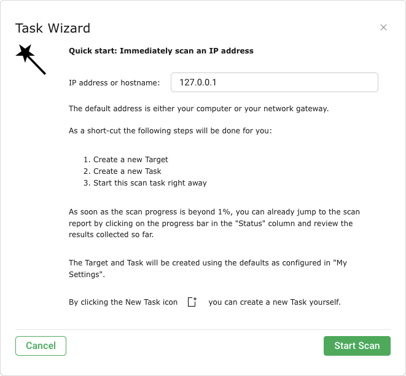
Рис. 9.1 Настройка мастера задачи¶
Примечание
Однако при использовании DNS-имени устройства должна быть возможность разрешить это имя.
Нажмите Начать сканирование.
→ Мастер задачи автоматически выполняет следующие действия:
Создание нового объекта для устройства.
Создание новой задачи на устройстве.
Немедленный запуск задач проверки.
Отображение страницы Задачи.


После запуска задачи можно отслеживать ход выполнения (см. Рис. 9.2).

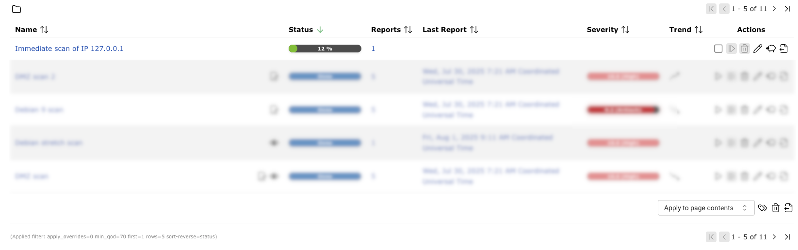
Рис. 9.2 Страница Задачи ход выполнения задачи¶
Статус задачи см. во главе 9.8.
Кончик
Отчет о задаче можно отобразить сразу после запуска задачи, щелкнув полосу в столбце. Статус. Для чтения, управления и хранения отчетов см. главу 10.
Как меняется только статус Сделанный доступен полный отчет. В главе в любой момент можно просмотреть промежуточные результаты (см. 10.2.1).
Примечание
Для завершения консультации может потребоваться некоторое время. Страница обновляется автоматически, если доступны новые данные.
9.1.2 Использование мастера расширенных задач¶
Помимо простого мастера, устройство также предоставляет расширенный мастер, который обеспечивает дополнительные параметры настройки.
Новую задачу с помощью мастера расширенных задач можно настроить следующим образом:
Выбирать Сканирование > Задачи в меню.
Нажмите и выбрать Мастер расширенных задач раскрывающийся список.
Определите задачу (см. Рис. 9.3).
Кончик
Информация для ввода в поля ввода см. в главах. 9.2.1 и 9.2.2.
Если в поле ввода введен адрес электронной почты Отправить отчет по электронной почте возникновение оповещения, отправка электронного письма, как только задача будет завершена (см. Главу 9.12).
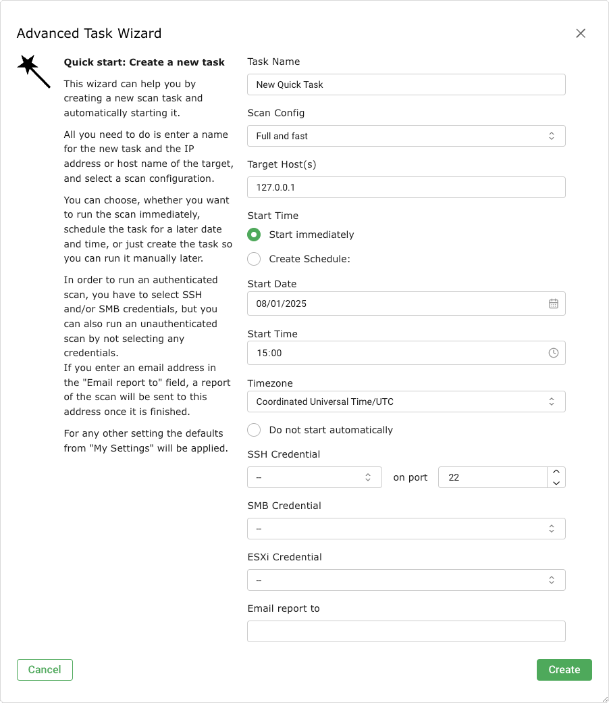
Рис. 9.3 Настройка мастера расширенных задач¶
Нажмите Создавать.
→ Мастер расширенных задач автоматически выполняет следующие действия:
Немедленный запуск задач проверки.
Отображение страницы Задачи.

Статус задачи см. во главе 9.8.
Кончик
Отчет о задаче можно отобразить сразу после запуска задачи, щелкнув полосу в столбце. Статус. Для чтения, управления и хранения отчетов см. главу 10.
Как меняется только статус Сделанный доступен полный отчет. В главе в любой момент можно просмотреть промежуточные результаты (см. 10.2.1).
Примечание
Для завершения консультации может потребоваться некоторое время. Страница обновляется автоматически, если доступны новые данные.
9.1.3 Использование мастера для изменения задачи¶
Дополнительный мастер может изменить существующую задачу:
Выбирать Сканирование > Задачи в меню.
Нажмите и выбрать Мастер изменения задачи раскрывающийся список.
В раскрывающемся списке выберите задачу, которую необходимо изменить. Задача (видеть Рис. 9.4).
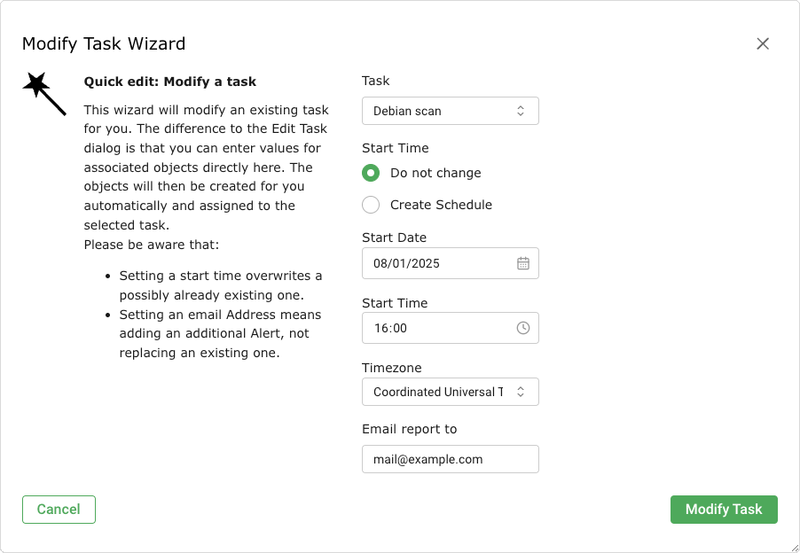
Рис. 9.4 Изменение задачи с помощью мастера¶
возьмите расписание для задачи, выберите переключатель Создать расписание (см. главу 9.10).
Дату первого поворота можно выбрать, нажав кнопку и время можно установить с помощью полей ввода.
В поле ввода введите адрес электронной почты, на который следует отправить отчет. Отправить отчет по электронной почте.
Нажмите Изменить задачу.


9.2 Настройка простого вручную¶
Вообще говоря, устройство может использовать два разных адаптера для аксессуаров:
Простое сканирование
Аутентифицированное сканирование с использованием локальных измерений безопасности
Для настройки простого решения необходимо выполнить следующие шаги:
9.2.1 Создание цели¶
Первым шагом является определение цели следующим образом:
Выбирать Конфигурация > Цели в меню.
Нажмите
 .
.Определите цель (см. Рис. 9,5).
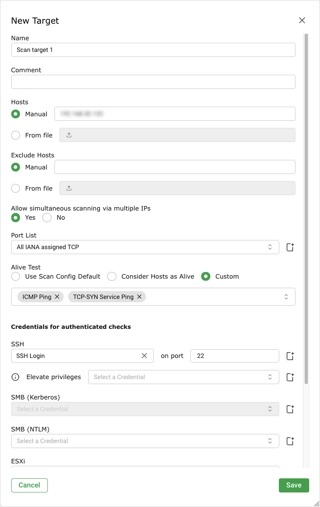
Рис. 9,5 Создание новой цели¶
Нажмите Сохранять.

Можно ввести эту информацию:
- Имя
Имя можно выбрать произвольно. Если возможно, следует выбрать описательное имя. Возможности: Mailserver, ClientNetwork, Webserverfarm, DMZ или более подробное описание введенных систем.
- Комментарий
Необязательный комментарий Помогает дать справочную информацию. Это общее понимание настроенных целей в будущем.
- Хозяева
Ручной вход хостов, который необходимо сканировать, через запятую или импорт списка хостов.
Примечание
Требуется IP-адрес или имя хоста. В обоих случаях необходимо, чтобы прибор мог подключиться к системе. При использовании устройства по имени хоста также должна быть возможность разрешить это имя.
Максимальное настраиваемое количество IP-адресов составляет 4096 для всех моделей устройств. Для АК-ШУМКАР 6500 максимальное настраиваемое количество IP-адресов составляет 16 777 216.
При ручном вводе доступны следующие варианты:
Один IP-адрес, например 192.168.15.5.
Имя хоста, например mail.example.com.
Увеличьте адрес IPv4 в длинном формате, например 192.168.15.5-192.168.15.27.
Увеличьте адрес IPv4 в коротком формате, например 192.168.55.5-27.
Диапазон адресов IPv4 в нотации CIDR, например 192.168.15.0/24.
Примечание
Из-за максимального настраиваемого количества IP-адресов (см.) максимальная маска подсети равна /20 для IPv4, если выше в схеме нет других хостов. Если максимальное количество IP-адресов больше, например для АК-ШУМКАР 6500, можно настроить маски подсети большего размера.
Традиционно первый IP-адрес (сетевой адрес, например, 192.168.15.0) и последний IP-адрес (широковещательный адрес, например, 192.168.15.255) сети не включаются в число подсчета IP-адресов и, следовательно, не учитываются при сканировании, когда используется это обозначение. Если IP-адреса действительно пригодны для использования и в офисе, их необходимо обязательно добавить в цель здания, например
192.168.15.0/24, 192.168.15.0, 192.168.15.255.Одиночный IPv6-адрес, например, fe80::222:64ff:fe76:4cea.
Увеличьте адреса IPv6 в длинном формате, например ::12:fe5:fb50-::12:fe6:100
Увеличьте адрес IPv6 в коротком формате, например::::::13:fe5:fb50-fb80
Диапазон адресов IPv6 в нотации CIDR, например, fe80::222:64ff:fe76:4cea/120
Примечание
Из-за максимального настраиваемого количества IP-адресов (см.) максимальная маска подсети равна /116 для IPv6 выше, если в схеме нет других хостов. Если максимальное количество IP-адресов больше, например для АК-ШУМКАР 6500, можно настроить маски подсети большего размера.
Несколько вариантов можно менять. При импорте из файла можно использовать тот же синтаксис. Записи можно разделить запятыми или разрывами строк. Если необходимо просканировать множество систем, проще использовать файл с хостами, чем вводить все хосты вручную. В файле должна быть использована кодировка символов ASCII.
В качестве альтернативы системы можно импортировать из базы данных основные активы.
Примечание
Импорт хоста из баз данных активов возможен только в том случае, если цель создана на странице. Хозяева (см. главу 12.1.3).
- Исключить хосты
Ручной вход хоста, который может привести к возникновению аварии из указанного выше списка, через запятую или импорт списка хостов.
При ручном вводе доступны следующие варианты:
Один IP-адрес, например 192.168.15.5.
Увеличьте адрес IPv4 в длинном формате, например 192.168.15.5-192.168.15.27.
Увеличьте адрес IPv4 в коротком формате, например 192.168.55.5-27.
Диапазон адресов IPv4 в нотации CIDR, например 192.168.15.0/24.
Одиночный IPv6-адрес, например, fe80::222:64ff:fe76:4cea.
Увеличьте адреса IPv6 в длинном формате, например ::12:fe5:fb50-::12:fe6:100
Увеличьте адрес IPv6 в коротком формате, например::::::13:fe5:fb50-fb80
Диапазон адресов IPv6 в нотации CIDR, например, fe80::222:64ff:fe76:4cea/120
Примечание
Также возможен ввод имен хостов/FQDN. Однако это не приводит к тому, что IP-адрес не сканируется (поскольку сканер основан на IP-адресе), а только удаляет конкретный хост из списка vhosts для IP-адреса.
- Разрешить одновременное сканирование через несколько IP-адресов
Некоторые службы, особенно устройства IoT, могут давать сбой при сканировании через несколько подключений, исходящих от одного и того же хоста одновременно. Это можно сделать, например, если устройство подключено через IPv4 и IPv6.
Выбор переключателя Нет Вы можете обратиться к нашим адресам одновременно.
- Список портов
Список портов, внешних последствий (см. главу) 9.7).
Примечание
Список портов можно создать на лету, щелкнув
рядом с раскрывающимся списком.
- Живой тест
Этот параметр определяет метод проверки доступности цели. Доступны следующие варианты:
Использовать конфигурацию по умолчанию: метод живых испытаний ICMP-пинг используется по умолчанию.
Сайт читайте хосты: Признаюсь, что хосты живы, и проверка работоспособности не проводится.
Обычай: доступные методы живых испытаний можно комбинировать по желанию. Доступны следующие методы живого тестирования:
ICMP-пинг
Пинг-сервис TCP-ACK
Пинг-служба TCP-SYN
ARP-пинг
Примечание
Все перечисленные выше методы работают как для IPv4, так и для IPv6.
Для целей IPv6 ICMP — это ICMPv6.
Если для целей IPv6 выбран ARP, активный сканер Boreas выполнит обнаружение соседей.
Иногда могут возникнуть проблемы с живым тестом. В некоторых средах маршрутизаторы и системы межсетевых экранов обеспечивают пинг-службу TCP с помощью TCP-RST, даже если хост на самом деле неактивен (см. главу). 9.13).
Обеспечивают сетевые компоненты, которые используют Proxy-ARP и предоставляют по запросу ARP. Поэтому этот тест часто требует локальной адаптации к окружающей среде.
- Учетные данные SSH
Выбор пользователя, который может войти в целевую систему случайно, если это система Linux или Unix. Это позволяет выполнять проверку с аутентификацией с использованием локальных наблюдений безопасности (см. Главы 9.3.2 и 9.3).
- Повышение привилегий
Также можно сохранить учетные данные для повышенных привилегий, например root.
Примечание
Функция все еще экспериментальная. В зависимости от выключаемой системы и ее конфигурации эта функция может быть ненадежной.
Чтобы использовать повышенные привилегии, сначала необходимо выбрать учетные данные SSH. Затем отображается новый раскрывающийся список для выбора учетных данных с повышенными правами.
Учетные данные SSH по умолчанию и повышенные права не могут совпасть.
Дополнительные требования и информация о повышении привилегий см. во главе 9.3.5.1.
- Учетные данные SMB — Kerberos или NTLM
Выбор пользователя, который может войти в целевую систему случайно, если это система Microsoft Windows. Это позволяет выполнять проверку с аутентификацией с использованием локальных наблюдений безопасности (см. Главы 9.3.2 и 9.3).
- Учетные данные ESXi
Выбор пользователя, который может войти в целевую систему, если это система VMware ESXi. Это позволяет выполнять проверку с аутентификацией с использованием локальных наблюдений безопасности (см. Главы 9.3.2 и 9.3).
- Учетные данные SNMP
Выбор пользователя, который может войти в целевую систему напрямую, если это система, поддерживающая SNMP. Это позволяет выполнять проверку с аутентификацией с использованием локальных наблюдений безопасности (см. Главы 9.3.2 и 9.3).
Примечание
Все учетные данные можно создать «на лету», нажав кнопку
рядом с учетными данными.- Только обратный просмотр
Сканируйте только IP-адреса, которые можно преобразовать в DNS-имя.
- Обратный просмотр
Если несколько IP-адресов преобразуются в одно и то же DNS-имя, DNS-имя будет сканироваться только один раз.
Примечание
Для унификации обратного поиска все целевые адреса проверяются перед сканерами, чтобы уменьшить количество фактически сканируемых адресов. Для больших целей и сетей, в которых обратный просмотр возникает, это приводит к длительной фазе, на которой выполнение задач остается на уровне 1%.
Этот параметр не рекомендуется использовать для больших сетей или сетей, в обратном просмотре которых возникает задержка.
9.2.2 Создание задачи¶
Второй шаг — создание задачи.
Устройство управления выполнением с помощью задачи. Эти задачи можно повторять регулярно или запускать в ближайшее время (см. главу 9.10).
Задачу можно создать следующим образом:
Выбирать Сканирование > Задачи в меню.
Нажмите
и выбрать Новая задача раскрывающийся список.Определите задачу (см. Рис. 9,6).
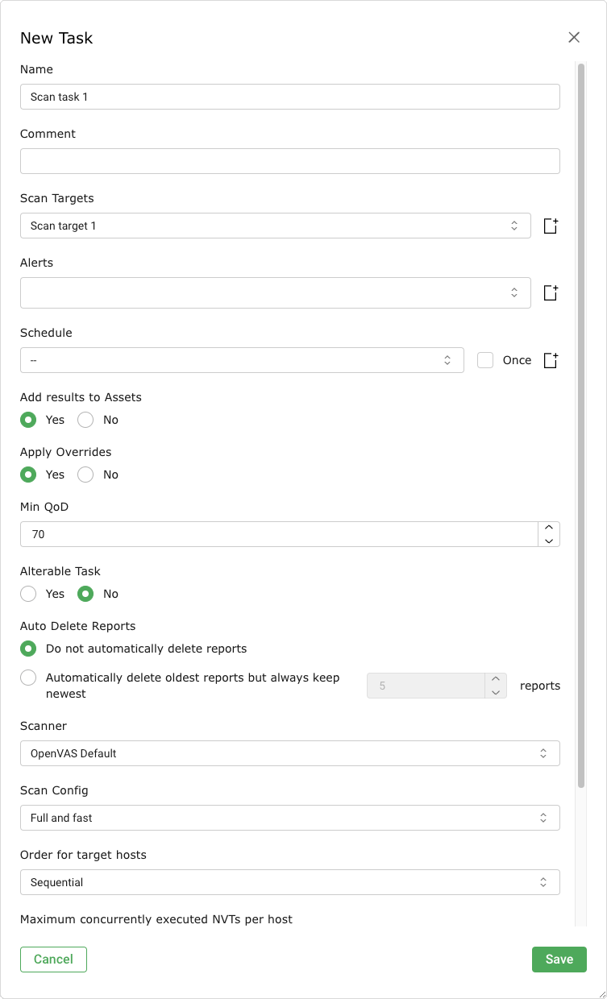
Рис. 9,6 Создание новой задачи¶
Нажмите Сохранять.
→ Задача создана и отображается на странице Задачи.

Можно ввести эту информацию:
- Имя
Имя можно выбрать произвольно. Если возможно, следует выбрать описательное имя. Возможности: Mailserver, ClientNetwork, Webserverfarm, DMZ или более подробное описание введенных систем.
- Комментарий
Необязательный комментарий Позволяет ввести дополнительную информацию. Это общее понимание настроенной задачи в будущем.
- Сканировать цели
Выберите ранее настроенную цельную из раскрывающегося списка (см. главу 9.2.1).
Кроме того, цель можно создать на лету, щелкнув
рядом с раскрывающимся списком.- Оповещения
Выберите ранее настроенное оповещение из раскрывающегося списка (см. главу). 9.12). Об изменениях задач можно отправлять по электронной почте, в системный журнал, по протоколу HTTP или через соединение.
Альтернативное оповещение можно создать «на лету», нажав кнопку
рядом с раскрывающимся списком.- Расписание
Из выпадающего списка выберите ранее настроенное расписание (см. главу 9.10). Задачу можно запускать один или несколько раз в заданное время, например, каждый понедельник утром в 6:00.
Кроме того, расписание можно создать «на лету», нажав кнопку
рядом с раскрывающимся списком.Примечание
Назначение одного и того же расписания большого количества задач может отрицательно повлиять на производительность системы и даже привести к ее сбою, если задачу выполнить по расписанию.
- Добавить результаты в активы
Выбор этой опции автоматически открывает системы, доступные для управления активами устройства (см. главу 12). Этот выбор также можно изменить позже.
- Применить переопределение
Переопределения можно применять непосредственно при добавлении результатов в базы данных активов (см. главу). 10.8).
- Мин. количество дней в день
Минимальное качество обнаружения результатов включения в фонды данных активов (см. главу 10.2.6).
- Изменяемая задача
Разрешить изменение целей путем сканирования и настройки конфигурации, даже если отчеты уже созданы. Согласованность между отчетами больше не может быть гарантирована, если задачу изменить.
- Автоматическое удаление результатов
Максимальное количество отчетов на хранение. При превышении максимального значения самый старый отчет автоматически удаляется. Заводская настройка Не удалять автоматические отчеты.
- Сканер
По умолчанию используются только встроенные сканеры Ак-шумкар и CVE (см. главу) 9.11). Датчики можно использовать в качестве дополнительного переключателя, но необходима их предварительная настройка (см. главу). 15).
Примечание
Следующие варианты актуальны только для сканера Ак-шумкар. Сканер CVE не поддерживает никаких опций.
- Конфигурация
Конфигурация позволяет установить набор сетевого оборудования, которое выполняется во время оказания услуг. Он также содержит общие и очень характерные (экспертные) параметры для серверов и некоторых виртуальных терминалов.
Устройство вывода с несколькими предварительными поворотными поворотами для сканера «Ак-шумкар» (см. главу) 9.9). Для каждой задачи можно настроить только одну конфигурацию.
- Максимальное количество одновременно выполняемых NVT на хосте
Выберите скорость обращения на одном хосте. Значения по умолчанию выбраны разумно. Если в системе одновременно работает больше виртуальных машин или одновременно сканируется несколько систем, сигнал может оказать негативное влияние либо на производительность сканируемых систем, либо на сеть, либо на само устройство. Эти значения «maxhosts» и «maxchecks» можно изменить.
- Ярлык
Выберите ранее настроенный тег раскрывающегося списка (см. главу 7.4), чтобы связать его с рукой.
9.2.3 Запуск задачи¶
В строке вновь созданной задачи нажмите кнопку  .
.
Примечание
Для запланированных задач  показать другое. Задача запускается в то время, которое было определено в расписании (см. главу 9.10).
показать другое. Задача запускается в то время, которое было определено в расписании (см. главу 9.10).
→ Задача включиться в очередь ожидания. После этого сканер начинает сканирование.
Примечание
В некоторых случаях проблема может остаться в очереди. Для получения дополнительной информации см. главу 16.3.
Статус задачи см. во главе 9.8.
Отчет о задаче можно отобразить сразу после запуска задачи, щелкнув полосу в столбце. Статус. Для чтения, управления и хранения отчетов см. главу 10.
Как меняется только статус Сделанный доступен полный отчет. В главе в любой момент можно просмотреть промежуточные результаты (см. 10.2.1).
Примечание
Для завершения консультации может потребоваться некоторое время. Страница обновляется автоматически, если доступны новые данные.
9.3 Настройка устройства с проверкой местоположения с использованием локальных точек безопасности.¶
Сканирование с аутентификацией может предоставить более подробную информацию об уязвимостях сканируемой системы. Во время работы с аутентификацией цель сканируется как снаружи с использованием сети, так и изнутри с использованием действительного входа пользователя.
Время проверки местоположения устройства входит в целевую систему, чтобы выбрать локальные проверки безопасности (LSC). Для оказания услуг требуется предварительная настройка учетных данных пользователя. Эти учетные данные используются для аутентификации в различных службах отключенных систем. В некоторых случаях разрешения на использование пользователей могут быть ограничены.
VT в соответствующих устройствах VT (локальные проверки безопасности) будут выполняться системой только в том случае, если устройству удалось войти в целевую систему. Местные проверки безопасности ТН в результате шока являются минимально инвазивными.
Устройство только определяет уровень риска, но не вносит никаких изменений в клеточную систему. Однако вход в систему устройства, скорее всего, регистрируется в протоколах отключенной системы.
Устройство может использовать разные учетные данные в зависимости от цели. Наиболее важные из них:
- СМБ
Внимательно устройство Microsoft Windows может проверять уровень исправлений и локально установленное программное обеспечение, такое как Adobe Acrobat Reader или пакет Java.
- SSH
Этот доступ используется для проверки уровней исправлений в Unix и Linux.
- ESXi
Этот доступ используется для локального тестирования серверов VMware ESXi.
- SNMP
Сетевые компоненты, такие как маршрутизаторы и коммутаторы, можно протестировать через SNMP.
В следующей таблице перечислены обязательный порт (при земле, что служба аутентификации использует порт по умолчанию) и разрешенные критерии учетных данных (см. главу). 9.3.2) для каждого метода аутентификации:
Требуемый порт |
Разрешенные типы учетных данных |
|
|---|---|---|
СМБ |
|
|
SSH |
|
|
ESXi |
|
|
SNMP |
|
|
9.3.1 Преимущества и недостатки сканирования с аутентификацией¶
Объем успехов и процедуры тестирования для программного обеспечения с проверкой ситуации во многих случаях осуществляется с использованием разрешенной учетной записи.
В среде Linux достаточно непривилегированный пользователь, и он может получить доступ к самой интересной информации, в то время как в среде Microsoft Windows непривилегированные пользователи очень ограничены, а пользователи с правами администратора обеспечивают больше результатов.
Непривилегированный пользователь не имеет доступа к реестру Microsoft Windows и системной привязанности Microsoft Windows. \окна который содержит информацию об обновлениях и последних исправлениях.
Локальные проверки безопасности — наиболее щадящий метод проверки, выявляющий об уязвимостях. Хотя дистанционные проверки безопасности также считаются незначительно инвазивными, они могут иметь мгновенный эффект.
Более того, сканирование с аутентификацией происходит на подходе «белого ящика». Устройство имеет доступ к первичной информации и может получить доступ к целям изнутри. В частности, доступны реестр, версии программного обеспечения и уровни исправлений.
Удаленное сканирование появилось на подходе «черного ящика». Устройство использует те же методы и протоколы, что и потенциальный злоумышленник, для доступа к целям извне. Единственная доступная информация была собрана на собственном компьютере. Во время проверки прибор может провоцировать все в работе для извлечения любой доступной информации об используемом программном обеспечении. Пример: сканер может отправить сервису неверный запрос, чтобы вызвать ответ, включая дополнительную информацию о продукте.
Во время удаленного обращения с использованием конфигурации офиса Полный и быстрый все удаленные безопасные проверки.
Использованные ВТ могут содержать некоторые инвазивные компоненты, но ни один из использованных ВТ не может вызвать дефект или неисправность мишени (см. пример ниже).
Это тщательная настройка Safe_checks = да в конфигурации (см. главу) 9.9.4).
Все ТН с очень инвазивными компонентами или которые могут вызвать отказ в обслуживании (DOS) автоматически проверяются в ходе проверки.
Пример инвазивной ЖТ
Примером инвазивной, но безопасной ЖТ является Heartbleed VT. Он отличился даже при Safe_checks включено, поскольку ВТ не оказывает никакого негативного воздействия на цель.
VT по-прежнему является инвазивным, поскольку недавно произошла утечка памяти цели. Если цель уязвима, происходит уничтожение фактической памяти цели. Устройство не анализирует утечку информации. Информация тут же удаляется.
9.3.2 Использование учетных данных¶
Учетные данные для локальных проверок безопасности необходимы, чтобы разрешить VT входить в целевые системы, например, с адресом локальной проверки всех исправлений поставщика безопасности.
9.3.2.1 Создание учетных данных¶
Новые учетные данные можно создать следующим образом:
Выбирать Конфигурация > Учетные данные в меню.
Нажмите
.Определите учетные данные (см. Рис. 9,7).
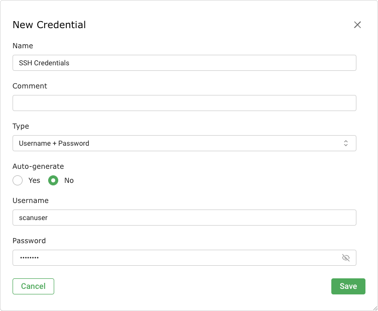
Рис. 9,7 Создание новых учетных данных¶
Нажмите Сохранять.

Примечание
Учетные данные должны быть значительными, хотя и с одной целью. Это позволяет мне вручную применять учетные данные.
Можно определить следующие детали учетных данных:
- Имя
Определение имени. Имя можно выбрать произвольно.
- Комментарий
Необязательный комментарий может оставить дополнительную информацию.
- Тип
Определение типа учетных данных. Возможные разновидности:
Имя пользователя + пароль
Имя пользователя + ключ SSH
SNMP
Сертификат S/MIME
Ключ шифрования PGP
Только пароль
СМБ (Керберос)
В зависимости от типа соединения дополнительные параметры:
- Имя пользователя + пароль
- Автогенерация
Выберите, будет ли устройство создавать пароль.
Примечание
Если переключить Да выбрано, невозможно определить пароль в поле ввода Пароль.
- Имя пользователя
Имя входа используйте для аутентификации в сканируемой закрытой системе.
Примечание
В имени пользователя разрешены только следующие символы:
Все английские буквенно-цифровые символы
- (бросаться)
_ (подчеркивание)
\ (обратная косая черта)
. (точка)
@ (у знака)
Это также плата за немецкие умлауты, которые необходимо заменить следующим образом:
«ß» → «сс»
«а» → «а»
«О» → «О»
«ю» → «у»
- Пароль
Пароль, дополнительный источник аутентификации в сканируемой закрытой системе.
- Имя пользователя + ключ SSH
- Автогенерация
Выберите, будет ли устройство создавать закрытый ключ SSH и паровую фразу для его шифрования.
Примечание
Если переключить Да выбрано, невозможно загрузить ключ SSH и определить фразу пароля в поле ввода Парольная фраза для закрытия ключа SSH.
- Имя пользователя
Имя входа используйте для аутентификации в сканируемой закрытой системе.
Примечание
В имени пользователя разрешены только следующие символы:
Все английские буквенно-цифровые символы
- (бросаться)
_ (подчеркивание)
\ (обратная косая черта)
. (точка)
@ (у знака)
Это также плата за немецкие умлауты, которые необходимо заменить следующим образом:
«ß» → «сс»
«а» → «а»
«О» → «О»
«ю» → «у»
- Парольная фраза
Парольная фраза закрытого ключа SSH.
- Закрытый ключ
Загрузка закрытого ключа SSH.
Поддерживаются типы ключей Ed25519, ECDSA, RSA и DSA.
Ключ должен быть в формате PEM или OpenSSH.
Для ключей DSA используются только форматы OpenSSH.
Чтобы преобразовать ключ DSA из формы PEM в формат OpenSSH, команда воспользуйтесь
ssh-кейген -п -ф <частный_ключ>можно использовать. При этом в качестве входных данных берется ключ в формате PEM, запрашивается старая фраза пароля (если она была установлена) и требуется установить новую фразу пароля, которая может быть идентична предыдущей фразе пароля. Затем ключ сохраняется в формате OpenSSH по умолчанию.Примечание
Упомянутая выше команда перезаписывает файл ключа. Если ключ в формате PEM необходимо сохранить, сначала необходимо создать его резервную копию.
- SNMP
Для SNMPv3 требуется имя пользователя, пароль аутентификации и конфиденциальность, как и для всех более старых версий SNMP (SNMPv1 и SNMPv2) требуется только SNMP сообщества.
Примечание
Из-за уникального характера учетных данных SNMP в настоящее время невозможно настроить режим SNMPv1/v2 или SNMPv3.
Это означает, что устройство всегда будет пытаться войти в систему со всеми версиями протокола SNMP. Можно увидеть оба результата Вход в SNMP для проверок с проверкой регионов и результат Ошибка входа в систему SNMP для этого, например, если информация для входа в систему SNMPv3 в учетных данных верна, но информация SNMPv1/2 неверна.
- SNMP-сообщество
Сообщество для SNMPv1 или SNMPv2c.
- Имя пользователя
Имя пользователя для SNMPv3.
Примечание
В имени пользователя разрешены только следующие символы:
Все английские буквенно-цифровые символы
- (бросаться)
_ (подчеркивание)
\ (обратная косая черта)
. (точка)
@ (у знака)
Это также плата за немецкие умлауты, которые необходимо заменить следующим образом:
«ß» → «сс»
«а» → «а»
«О» → «О»
«ю» → «у»
- Пароль
Пароль для SNMPv3.
- Пароль конфиденциальности
Пароль для шифрования для SNMPv3.
- Алгоритм аутентификации
Выбор алгоритма аутентификации (MD5 или SHA1).
- Алгоритм конфиденциальности
Выбор алгоритма шифрования (AES, DES или нет).
- Сертификат S/MIME
- Сертификат S/MIME
Загрузка файла сертификата. Сертификат файла должен соответствовать следующим условиям:
Закодирован в формате PEM (нельзя использовать двойной файл DER)
Использование формата X.509
Действителен (не окончен)
Объединяет все сертификаты-цепочки (корневой сертификат и все промежуточные сертификаты)
Если исходный сертификат используется в связанном формате, который также включает закрытый ключ, необходимо загрузить только незашифрованный сертификат.
- Ключ шифрования PGP
- Открытый ключ PGP
Загрузка файла открытого ключа пары ключей PGP.
- Только пароль
- Пароль
Пароль, дополнительный источник аутентификации в сканируемой закрытой системе.
- СМБ (Керберос)
Примечание
Чтобы включить аутентификацию через Kerberos на цели, устройство должно использовать DNS-сервер, способный выполнить обратный поиск цели.
В случае обнаружения результатов с использованием сенсорного устройства, сенсорное устройство также должно соответствовать этому устройству.
Если аутентификация через Kerberos не удалась, в качестве резервного соединения будет использована аутентификация NTLM.
- Имя пользователя
Для определения имени входа используйте устройство для аутентификации в сканируемой закрытой системе.
Примечание
В имени пользователя разрешены только следующие символы:
Все английские буквенно-цифровые символы
- (бросаться)
_ (подчеркивание)
\ (обратная косая черта)
. (точка)
@ (у знака)
Это также плата за немецкие умлауты, которые необходимо заменить следующим образом:
«ß» → «сс»
«а» → «а»
«О» → «О»
«ю» → «у»
- Пароль
Пароль, дополнительный источник аутентификации в сканируемой закрытой системе.
- область
Область Kerberos, обслуживаемая одним или несколькими центрами ключей распространения (KDC). Обычно это DNS-домен.
Область необходимо использовать заглавными буквами, например EXAMPLE.COM.
- Центр выдачи ключей
Центр распространения ключей (KDC) после этого использует имя пользователя и пароль и получает зашифрованные сертификаты подлинности билета.
Можно добавить несколько KDC.
KDC можно указать по IP-адресу или имени хоста.
Нажимать Входить после ввода IP-адреса или имени хоста KDC, чтобы добавить его в список.
Порты 88/UDP и порт 88/TCP должны быть открыты на KDC.
9.3.2.2 Управление учетными данными¶
Страница списка
Все возможные учетные данные можно отобразить, выбрав Конфигурация > Учетные данные в меню.
Для всех учетных данных отображается следующая информация:
- Имя
Имя учетных данных.
- Тип
Выбранный тип учетных данных.
- Авторизоваться
Имя пользователя для учетных данных, если выбран тип учетных данных, требующий имени пользователя.
Для всех учетных данных доступны следующие действия:
 Переместите учетные данные в корзину. В корзину можно перенести только те учетные данные, которые в данный момент не использовались.
Переместите учетные данные в корзину. В корзину можно перенести только те учетные данные, которые в данный момент не использовались. Отредактируйте учетные данные.
Отредактируйте учетные данные. Клонируйте учетные данные.
Клонируйте учетные данные. Экспортируйте учетные данные в видео XML-файла.
Экспортируйте учетные данные в видео XML-файла.
В зависимости от типа учетных данных (см. главу) 9.3.2.1) могут быть доступны дополнительные действия:
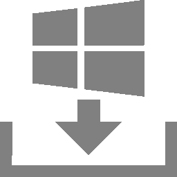
Загрузите пакет EXE для Microsoft Windows. Это действие доступно, если Имя пользователя + пароль был выбран.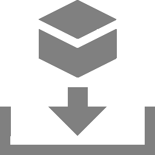
Загрузите пакет RPM для Red Hat Enterprise Linux и его производные. Это действие доступно, если Имя пользователя + ключ SSH был выбран.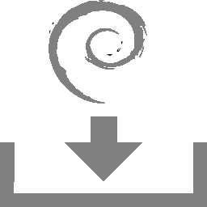
Загрузите пакет Debian для Debian GNU/Linux и его производных. Это действие доступно, если Имя пользователя + ключ SSH был выбран.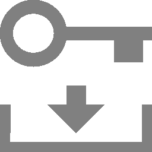
Загрузите открытый ключ. Это действие доступно, если Имя пользователя + ключ SSH был выбран.


Эти установочные пакеты упрощают установку и создание учетных записей для проверки региона. Они оформляют пользователю и наиболее важные разрешения для устройств с аутентификацией и сбрасывают их во время удаления.
Примечание
Если включена автогенерация паролей (см. гл. 9.3.2.1), пакеты должны использоваться, в противном случае их использование не является обязательным.
Примечание
Нажав или Под списком учетных данных можно одновременно переместить в корзину или экспортировать несколько наборов учетных данных. Распространенный список используется для выбора учетных данных, которые необходимо переместить в корзину или экспортировать.
Страница раскрыта
Нажмите на имя набора учетных данных, чтобы отобразить подробную информацию об учетных данных. Нажмите  чтобы открыть страницу, укажите об учетных данных.
чтобы открыть страницу, укажите об учетных данных.
Доступны следующие вкладки:
- Информация
Общие сведения о полномочиях.
- Пользовательские теги
Присвоенные теги (см. главу 7.4).
- Разрешения
Назначенные разрешения (см. главу 8.4).
В левом верхнем углу пульта доступны следующие действия:
 Ознакомьтесь с соответствующим главой руководства пользователя.
Ознакомьтесь с соответствующим главой руководства пользователя. Показать страницу со списком всех учетных данных.
Показать страницу со списком всех учетных данных.- создать новые учетные данные (см. главу 9.3.2.1).
- Клонируйте учетные данные.
- Отредактируйте учетные данные.
- Переместите учетные данные в корзину. В корзину можно перенести только те учетные данные, которые в данный момент не использовались.
- Экспортируйте учетные данные в видео XML-файла.
В зависимости от типа учетных данных (см. главу) 9.3.2.1) могут быть доступны дополнительные действия:
Загрузите пакет EXE для Microsoft Windows. Это действие доступно, если Имя пользователя + пароль был выбран.
Загрузите пакет RPM для Red Hat Enterprise Linux и его производные. Это действие доступно, если Имя пользователя + ключ SSH был выбран.
Загрузите пакет Debian для Debian GNU/Linux и его производных. Это действие доступно, если Имя пользователя + ключ SSH был выбран.
Загрузите открытый ключ. Это действие доступно, если Имя пользователя + ключ SSH был выбран.
9.3.3 Требования к целевым системам с Microsoft Windows¶
9.3.3.1 Общие замечания по конструкции¶
Для доступа к реестру необходимо запустить сервис удаленного реестра.
Это с помощью настройки ручки запуска службы. Если автоматический запуск нежелателен, можно настроить запуск вручную. В этом случае служба отключается во время подключения телефона, а затем снова отключается. Чтобы обеспечить такое поведение, необходимо прочитать информацию о LocalAccountTokenFilterPolicy.
Необходимо, чтобы для всех сканируемых систем был обеспечен общий доступ к файлам и принтерам. Если вы используете Microsoft Windows XP, обязательно отключите этот режим. Используйте простой общий доступ к файлам.
Для отдельных систем, не подключенных к домену, необходимо установить следующий ключ реестра:
ХКЛМ\ПРОГРАММНОЕ ОБЕСПЕЧЕНИЕ\Майкрософт\Окна\Текущая версия\Политика\Система\ ДВОРД: Локалаккаунтокенфильтрполиции = 1
В спокойном режиме с контроллером домена используется учетная запись пользователя, которая должна быть членом группы. Администраторы домена для достижения наилучших результатов. Из-за концепции разрешений невозможно обеспечить все уязвимости с помощью Локальный администратор или администраторы, назначенные доменом. Альтернативно следуйте за лидерами во главе 9.3.3.2.
→ Должен ли Локальный администратор быть выбранным – что явно не рекомендуется – необходимо также установить следующий реестр ключей:
ХКЛМ\ПРОГРАММНОЕ ОБЕСПЕЧЕНИЕ\Майкрософт\Окна\Текущая версия\Политика\Система\ ДВОРД: Локалаккаунтокенфильтрполиции = 1
Сгенерированный установочный пакет для учетных данных: Установщик устанавливает автоматический запуск службы удаленного реестра. Если установщик показывает результат в домене контроллера, учетная запись пользователя будет назначена группе. ВСТРОЕННЫЕ/Администраторы (
SID С-1-5-32-544).Необходимо создать правило-исключение для устройства в брандмауэре Microsoft Windows. Кроме того, в сервисе XP Общий доступ к файлам и принтерам должен быть установлен на включено.
Сгенерированный установочный пакет для учетных данных: Во время установки установщик предлагает рядом окно для ввода IP-адреса устройства. Если запись подтверждена, правило межсетевого экранного настроения. Сервис Общий доступ к файлам и принтерам будет включено в правила брандмауэра.
С учетом заявлений, использование при сканировании с проверкой регионов может привести к недопустимому выполнению Powershell в выдвижной системе. Тесты политики и уязвимостей иногда могут выполняться командой Powershell для корректировки результатов точности, требуя привилегий на время быстро.
Для аудита соответствия, ориентированного на операционные системы Windows, рекомендуется установить Максимальное количество одновременно выполняемых NVT на хосте к
1для того, чтобы максимизировать точность результатов (см. главу 11.2.1.1).Для полноценного доступа к инструментарию управления Windows (WMI), который используется, например, для поиска файлов или поиска политик, необходимы следующие настройки:
Разрешить доступ к WMI в Настройки брандмауэра Windows или возможное стороннее решение брандмауэра.
Убедитесь, что пользователю или группе пользователей разрешен удаленный доступ к WMI.
Чтобы полностью использовать устройство, необходимо убедиться, что можно использовать набор инструментов Impacket.
Это гарантирует, что безопасность других продуктов не помечает выполнение командой Powershell через Impacket как традиционное.
Если возможно, следует настроить необходимое напряжение.
Кроме того, необходимо убедиться, что общий ресурс ADMIN$ доступен для чтения и записи.
Чтобы обеспечить полную работоспособность команды Powershell, цель должна соответствовать как минимум версии Powershell PS5.1 (WMF5.1). Команды также могут работать с пациентами на более низком уровне Powershell, но это не может быть гарантировано.
Для аутентификации с использованием учетных данных Kerberos необходимо выполнить следующие требования:
Имя пользователя и пароль, введенные при вводе учетных данных Kerberos, должны быть указаны для учетных записей домена.
Настоятельно рекомендуется, чтобы учетная запись имела права локального администратора на целевом объекте.
Для подключения контроллера домена или другой системы прав локального администратора может быть недостаточно. В этом случае рекомендуется использовать учетную запись с правами администратора домена.
Для логической работы Kerberos требуется, чтобы цель была частью функционирующего домена Microsoft Windows с работающим контроллером домена, инфраструктурой DNS и сетью.
9.3.3.2 Настройка учетной записи домена для случайной проверки территорий¶
Для аутентифицированного клиентского целевого компьютера Microsoft Windows настоятельно рекомендуется использовать учетную запись домена с политикой домена, предоставляющую права локального администратора. Это дает несколько преимуществ:
Политику домена необходимо создать только один раз, а затем ее можно будет применить или отменить для разных учетных записей пользователей.
Локальное редактирование реестра Microsoft Windows больше не требуется. Таким образом, администрирование пользователей централизовано, что экономит время в большей степени и сокращает возможные ошибки в конфигурации.
С точки зрения обнаруживать уязвимости только учетная запись домена Позволяет находить результаты оперативно, связанные с доменом. Эти результаты будут отсутствовать при использовании локальной учетной записи пользователя.
Использование доменной учетной записи с политикой домена, предпочтительной «Ак Шумкар», также дает некоторые преимущества безопасности: соответствующий пользователь не может входить в систему локально или через нее. протокол удаленного рабочего стола (RDP), ограничивающий возможность атаки. Кроме того, учетные данные пользователя защищены с помощью Kerberos, пароль локальной учетной записи пользователя используется гораздо большим риском раскрытия с помощью эксплойтов.
Чтобы использовать учетную запись домена для аутентифицированного алгоритма или аудита в ограниченной системе Microsoft Windows, целевая система должна быть частью домена, и в автоматизированной системе необходимо изменить этот параметр.
Создание группы безопасности
Войдите в контроллер домена и перехода Пользователи компьютеров и Active Directory.
Выбирать Действие > Создать > Группа в меню.
Входить
Ак Шумкар Местный Сканироватьв поле ввода Имя.Выбирать Глобальный для Область действия группы и Безопасность для Тип группы.
Добавьте в группу учетную запись, используемую для локального терминала с проверкой местоположения устройства под Microsoft Windows.
Нажмите ХОРОШО.
Создание объекта групповой политики (ГПО)
В левой панели входная консоль Управление групповой политики.
правая кнопка мыши Объекты групповой политики и выбрать Новый.
Входить
Ак Шумкар Местный Секретные правав поле ввода Имя (видеть Рис. 9,8).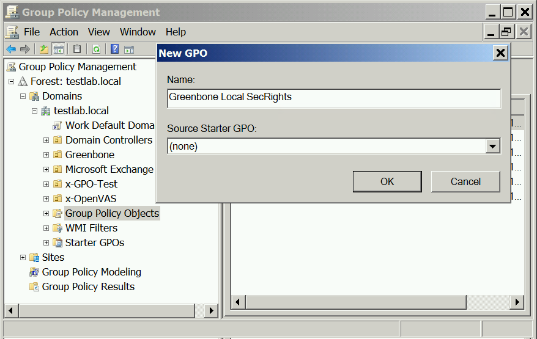
Рис. 9,8 Создание нового объекта групповой политики Microsoft Windows для устройства «Ак Шумкар».¶
Нажмите ХОРОШО.

Настройка политики
Нажмите на политику Ак Шумкар Местный Секретарь и выбрать Редактировать.
Выбирать Конфигурация компьютера > Политики > Настройки Windows > Настройки безопасности на левой панели.
Нажмите Группы с ограниченным доступом и выбрать Добавить группу.
Нажмите Просматривать… и введите
Ак Шумкар Местный Сканироватьв поле ввода (см. Рис. 9,9).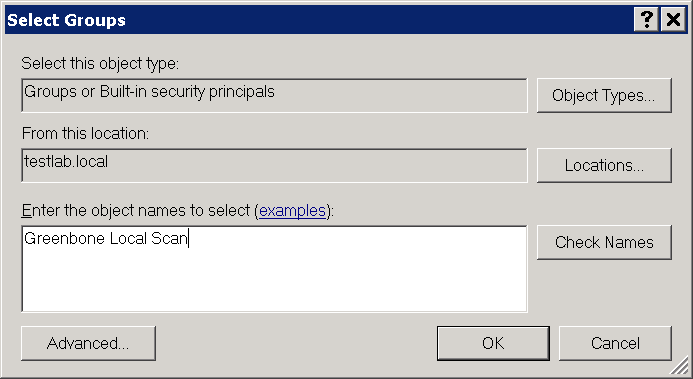
Рис. 9,9 Проверка имен групп Microsoft Windows¶
Нажмите проверить имена.
Нажмите ХОРОШО Чтобы закрыть открытое окно, необходимо дважды.
В Эта группа является членом щелкнуть Добавить.
Входить
Администраторыв поле ввода Группа (видеть Рис. 9.10) и нажмите ХОРОШО Чтобы закрыть открытое окно, необходимо дважды.Примечание
В нерусскоязычных обсуждениях содержится имя группы локальных администраторов.
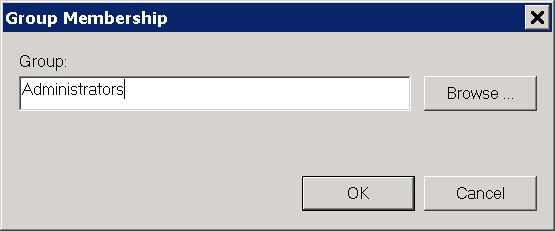
Рис. 9.10 Добавление членства в группу¶


Настройка политики для запрета группы «Ак Шумкар Локальное сканирование» вход в систему локально
Нажмите на политику Ак Шумкар Местный Секретарь и выбрать Редактировать.
Выбирать Конфигурация компьютера > Политики > Настройки Windows > Параметры безопасности > Локальные политики > Назначение прав пользователя на левой панели.
На правой панели дважды щелкните Запретить вход в систему локально.
Активируйте флажок Определите эти параметры политики и нажмите Добавить пользователя или группу.
Нажмите Просматривать… и введите
Ак Шумкар Местный Сканироватьв поле ввода (см. Рис. 9.11).Нажмите проверить имена.
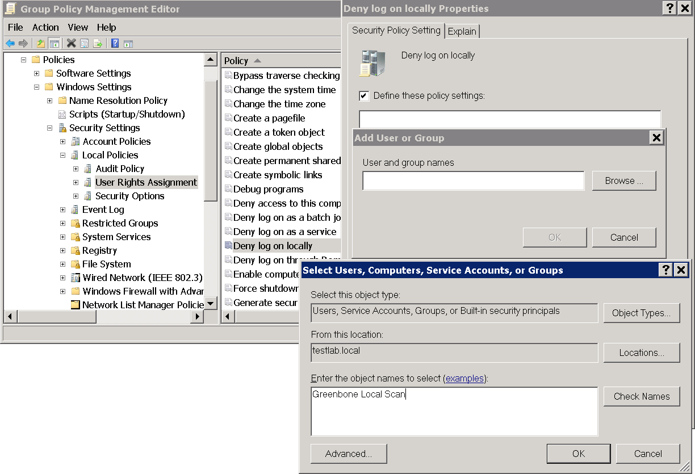
Рис. 9.11 Редактирование политики¶
Нажмите ХОРОШО три раза закрой открытое окно.

Настройка политики запрета группы «Ак Шумкар Локальное ограничение» вход в систему через удаленный рабочий стол
Нажмите на политику Ак Шумкар Местный Секретарь и выбрать Редактировать.
Выбирать Конфигурация компьютера > Политики > Настройки Windows > Параметры безопасности > Локальные политики > Назначение прав пользователя на левой панели.
На правой панели дважды щелкните Запретить вход в систему через службы удаленных рабочих столов.
Активируйте флажок Определите эти параметры политики и нажмите Добавить пользователя или группу.
Нажмите Просматривать… и введите
Ак Шумкар Местный Сканироватьв поле ввода (см. Рис. 9.12).Нажмите проверить имена.
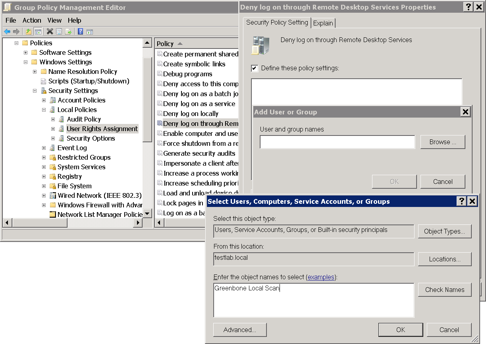
Рис. 9.12 Редактирование политики¶
Нажмите ХОРОШО три раза закрой открытое окно.

Настройка политики для предоставления разрешений на чтение только реестра для группы «Локальное сканирование Ак Шумкар»
Важный
Этот параметр все еще существует после удаления объекта групповой политики («татуирование объекта групповой политики»).
Это мои фундаментальные привилегии, которые нельзя просто отменить, удалив объект групповой политики.
Решите, совместимы ли настройки с окружающей средой.
Примечание
Следующие шаги не являются обязательными.
На левой панели щелкните правой кнопкой мыши Реестр и выбрать Добавить ключ.
Выбирать ПОЛЬЗОВАТЕЛИ и нажмите ХОРОШО (видеть Рис. 9.13).
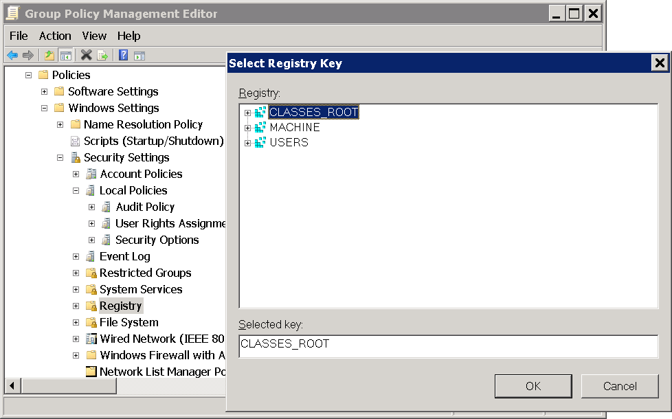
Рис. 9.13 Выбор включения реестра¶
Нажмите Передовой и Добавить.
Входить
Ак Шумкар Местный Сканироватьв поле ввода и нажмите ХОРОШО (видеть Рис. 9.14).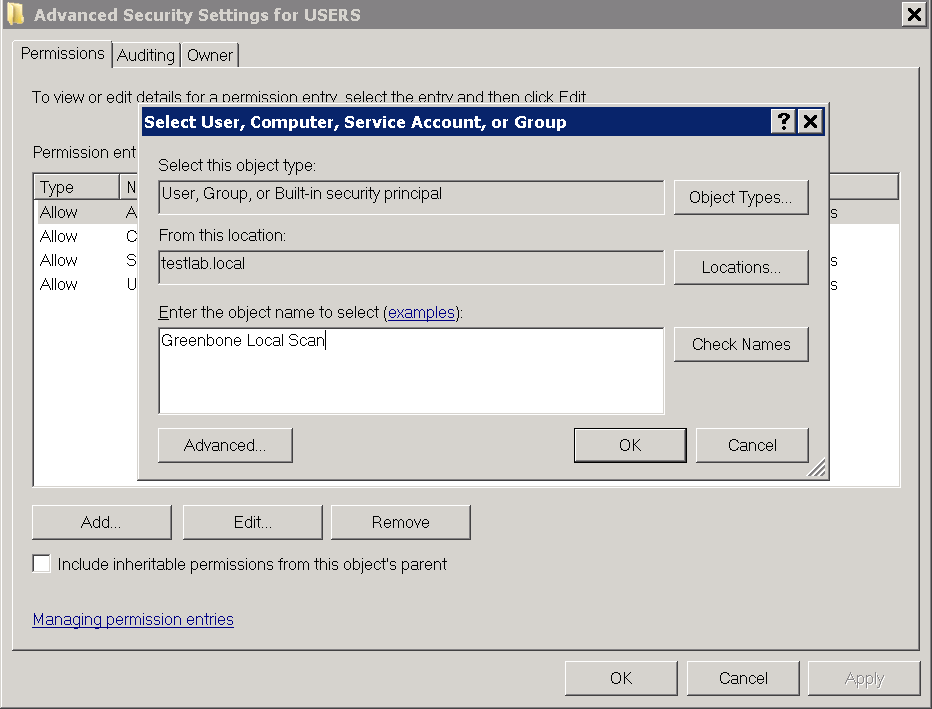
Рис. 9.14 Выбор группы Ак Шумкар Локальное сканирование¶
Выбирать Этот объект и дочерние объекты раскрывающийся список Подать заявку на.
снимите все флажки для Позволять и активируйте флажки Установить значение, Создать подраздел, Создать ссылку, Удалить, Изменить разрешения и Возьмите на себя ответственность для Отрицать (видеть Рис. 9.15).
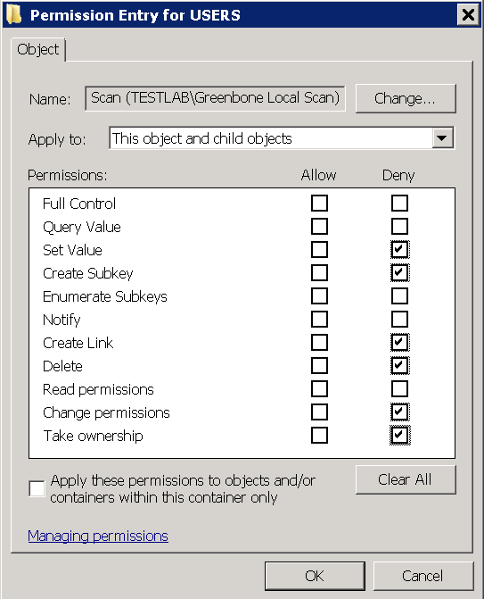
Рис. 9.15 Запретить редактирование реестра¶
Нажмите ХОРОШО дважды и подтвердите предупреждающее сообщение, нажав Да.
Нажмите ХОРОШО.
Выберите переключатели Затем настройте этот ключ и Распространить наследуемые разрешения на все подразделы. и нажмите ХОРОШО (видеть Рис. 9.16).
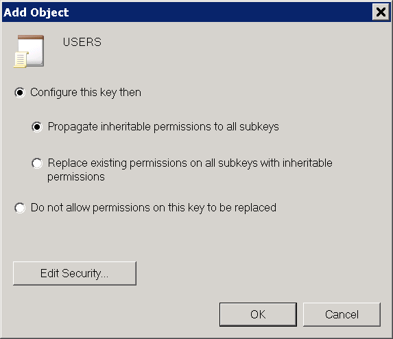
Рис. 9.16 Рекурсивное выполнение разрешений¶
Повторите шаги со 2 по 9 для МАШИНА и CLASSES_ROOT.


Связывание объекта групповой политики
На правой панели щелкните правой кнопкой мыши домен и выберите Связать существующий объект групповой политики….
Выбирать Ак Шумкар Местный Секретарь в разделе Объекты групповой политики и нажмите ХОРОШО (видеть Рис. 9.17).
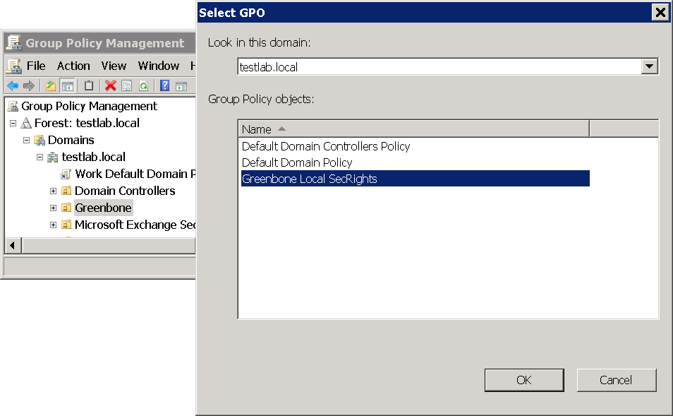
Рис. 9.17 Связывание политики¶

9.3.3.3 Ограничения¶
В связи с тем, что права на запись в реестр и системный диск удалены, следующие два теста больше не будут работать:
- Оставлять информацию о сканируемых хостах Windows (OID 1.3.6.1.4.1.25623.1.0.96171)
Этот тест, при желании, создает информацию о начале и окончании сканирования в разделе HKLM\Software\VulScanInfo. Из-за запрета доступа на запись в HKLM это больше невозможно. Если проверка должна быть возможной, объект групповой политики должен быть соответствующим образом скорректирован.
- Контрольные суммы файлов Windows (OID 1.3.6.1.4.1.25623.1.0.96180)
Этот тест при желании сохраняет инструмент ReHash в папке C:\Windows\system32 (для 32-битных систем) или C:\Windows\SysWOW64 (для 64-битных систем). Из-за запрета доступа на запись это больше невозможно. Если проверка возможна, инструмент необходимо сохранить отдельно или соответствующим образом настроить объект групповой политики.
Более подробную информацию можно найти в главе 11.4.3.
9.3.3.4 Сканирование без прав администратора домена и локального администратора¶
Можно создать объект групповой политики, в котором пользователь также не имеет прав локального администратора. Но усилия по добавлению соответствующих разрешений на чтение для каждой ветки и папки реестра огромны. К сожалению, для многих папок и веток наследование разрешений отключено. Кроме того, эти изменения могут быть установлены с помощью объекта групповой политики, но не могут быть удалены повторно (татуирование объекта групповой политики). Определенные разрешения могут быть перезаписаны, что также может привести к возникновению дополнительных проблем.
Создание объекта групповой политики, в котором у пользователя нет прав локального администратора, не имеет смысла с технической и административной точки зрения.
9.3.4 Требования к целевым системам с ESXi¶
Примечание
Если vCenter Server Appliance (VCSA) используется для управления хостами ESXi и пользователи создаются на VCSA, они известны только на VCSA, но не на хостах ESXi.
Пользователи сканирования должны быть созданы на каждом сканируемом хосте ESXi.
По умолчанию локальные пользователи ESXi ограничены ролями только для чтения. Необходимо использовать либо учетную запись администратора, либо роль только для чтения с разрешением на глобальные настройки.
Роль только для чтения с разрешением на глобальные настройки можно настроить следующим образом:
Откройте веб-интерфейс экземпляра VMware ESXi и войдите в систему.
Выбирать Хост > Управление в Навигатор столбец слева.
Выберите вкладку Безопасность и пользователи.
Выбирать Роли в левой панели меню (см. Рис. 9.18).
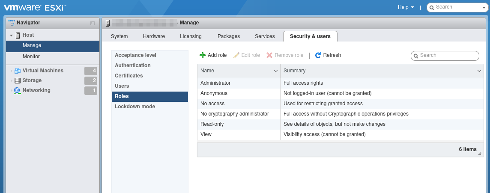
Рис. 9.18 Отображение ролей¶
Нажмите Добавить роль.
Введите имя роли в поле ввода. Имя роли.
Активируйте флажок Система.
Нажмите Глобальный и активируйте флажок Настройки (видеть Рис. 9.19).
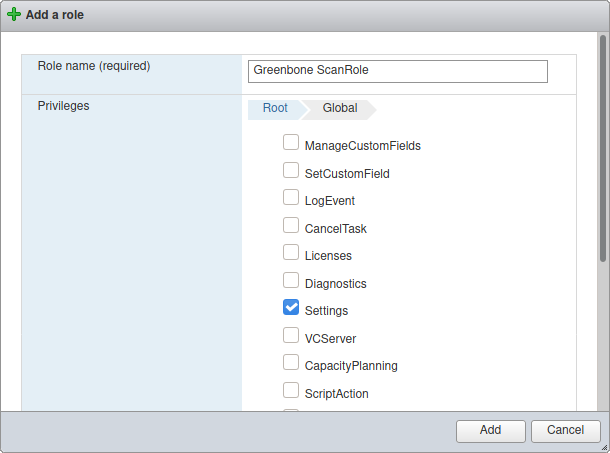
Рис. 9.19 Создание роли¶
Нажмите Добавить.
правая кнопка мыши Хозяин и выбрать Разрешения в Навигатор столбец слева.
Выберите учетную запись пользователя сканирования, используемую устройством.
Нажмите Назначить роль.
В раскрывающемся списке выберите ранее созданную роль (см. Рис. 9.20).
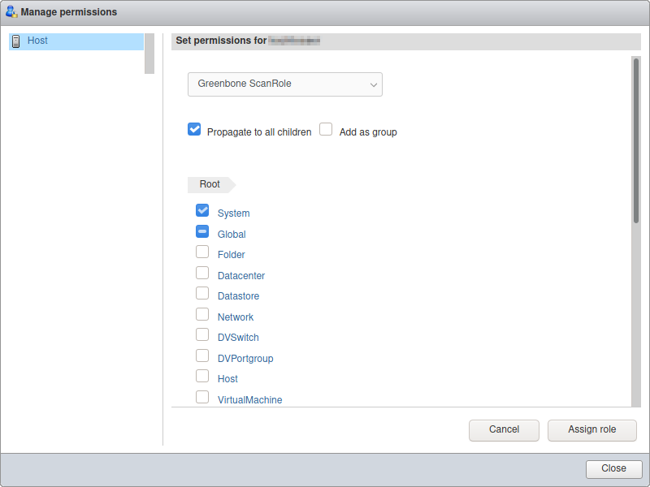
Рис. 9.20 Назначение роли пользователю сканирования¶
Нажмите Назначить роль.
Нажмите Закрывать.


9.3.5 Требования к целевым системам с Linux/Unix¶
Для аутентифицированного сканирования в системах Linux или Unix обычно достаточно обычного доступа пользователя. Вход осуществляется через SSH. Аутентификация осуществляется либо с помощью паролей, либо с помощью закрытого ключа SSH, хранящегося на устройстве.
Удаленный SSH-сервер должен иметь следующие настройки по умолчанию, настроенные в файле
sshd_config:МаксСессионс: 10MaxAuthTries: 6
При использовании нестандартных и более низких значений могут возникнуть неудачные попытки входа в систему.
Сгенерированный установочный пакет для учетных данных: установочный пакет для дистрибутивов Linux на основе Debian — это файл DEB, установочный пакет для дистрибутивов Linux на основе Red Hat — это RPM-файл. Оба установочных пакета создают нового пользователя без каких-либо особых разрешений. Открытый ключ SSH, созданный на устройстве, хранится в домашней папке пользователя. Пользователям других дистрибутивов Linux или производных Unix открытый ключ предлагается для загрузки. Ответственность за создание пользователя и сохранение открытого ключа с соответствующими правами доступа к файлу лежит на пользователе.
В обоих случаях необходимо убедиться, что аутентификация с открытым ключом не запрещена демоном SSH. Линия
PubkeyАутентификация нетне должно присутствовать.Также можно использовать существующие пары ключей SSH. Пары ключей SSH можно сгенерировать с помощью команды
ssh-кейгенв Linux илиputtygen.exeесли вы используете PuTTY в Microsoft Windows. Чтобы использовать существующую пару ключей SSH для аутентификации, при создании учетных данных необходимо указать закрытый ключ. Поддерживаются типы ключей Ed25519, ECDSA, RSA и DSA. Закрытый ключ SSH должен быть в формате PEM или OpenSSH. Для ключей DSA поддерживается только формат OpenSSH.Для сканирования, включающего тестирование политики, права root или членство в определенных группах (часто
колесо) может понадобиться. По соображениям безопасности многие файлы конфигурации доступны для чтения только суперпользователям или членам определенных групп.Чем больше разрешений имеет пользователь, тем больше результатов и настроек можно обнаружить в системе. В некоторых случаях может потребоваться доступ root-пользователя.
Следующие команды выполняются с правами root-пользователя во время сканирования с проверкой подлинности.
Важный
Этот список не статичен. Новые или измененные виртуальные машины могут добавлять новые команды в любое время.
В зависимости от найденного программного обеспечения могут выполняться дополнительные команды.
Выполняемые команды зависят от дистрибутива Linux и выбранной конфигурации сканирования.
бить
кот
дата
ДПКГ
эгреп
находить
греп
хозяин
идентификатор
IP
последний журнал
найти
лс
md5сумма
mlocate
нетстат
перл
пс
об/мин
ш
ша1сум
располагать
не называть имя
время безотказной работы
где
который
Установка пакета
найти(альтернативноmlocate), чтобы дать командунайти/mlocateв целевой системе рекомендуется. Использование этой команды уменьшает количество вызовов командынаходитьиспользуется для поиска файлов и, таким образом, повышает производительность поиска и снижает использование ресурсов целевой системы.Чтобы команды работали, возможно, потребуется настроить соответствующие разрешения базы данных и регулярные обновления базы данных, например, с помощью задания cron.
9.3.5.1 Требования и справочная информация для Повышение привилегий Особенность¶
При использовании Повышенные привилегии особенность:
Права пользователя с повышенными правами необходимо заранее настроить в целевой системе. Устройство выполняет только команду
Су - <имя пользователя>который не имеет контроля над правами использования.Если настроены учетные данные SSH с повышенными правами, учетные данные SSH по умолчанию используются только для входа в целевую систему. Для сканирования используются учетные данные с повышенными правами.
Программы Стти, не установлен и связывать должен быть доступен/доступен для пользователя с повышенными привилегиями.
Пользователю с повышенными привилегиями должно быть разрешено изменять приглашение на вход через
экспорт ПС1=добавляется к отправленным командам.Если настроены повышенные учетные данные SSH, они всегда используются, даже если конфигурация сканирования не содержит соответствующих тестов на уязвимости.
Учетные данные SSH по умолчанию и повышенные права не могут совпасть.
В настоящее время эта функция поддерживается только для оболочки «bash».
Примечание
Повышение привилегий функция все еще является экспериментальной. В зависимости от целевой системы и ее конфигурации эта функция может быть ненадежной.
Использование учетных данных SSH с повышенными правами может создать повышенную нагрузку на устройство, а также увеличить количество подключений SSH от устройства к целевой системе. Это может потребоваться принять во внимание для брандмауэров, систем обнаружения вторжений и регистрации.
Кроме того, продолжительность сканирования с использованием повышенных учетных данных SSH может быть намного дольше, чем сканирование без повышенных учетных данных из-за упомянутой выше нагрузки на систему.
9.3.5.2 (Безопасность) Рекомендации по сканированию с проверкой подлинности на основе SSH¶
При выполнении сканирования с проверкой подлинности на основе SSH следует применять следующие рекомендации по обеспечению безопасности.
Не рекомендуется сканировать весь диапазон сети с учетными данными SSH, назначенными цели. Вместо этого следует проводить целевое сканирование известных систем с указанием конкретных IP-адресов.
Следует использовать как можно меньше разрешений, например, используя выделенного пользователя для сканирования вместо пользователя root.
Сканировать следует только доверенную систему, например, никакие общедоступные системы, к которым может получить доступ любой пользователь.
9.3.6 Требования к целевым системам с ОС Cisco¶
Устройство также может проверять сетевые компоненты, такие как маршрутизаторы и коммутаторы, на наличие уязвимостей. Хотя обычные сетевые службы обнаруживаются и проверяются через сеть, некоторые уязвимости можно обнаружить только при аутентифицированном сканировании. Для сканирования с проверкой подлинности устройство может использовать SNMP или SSH.
9.3.6.1 SNMP¶
Устройство может использовать протокол SNMP для доступа к сетевому компоненту Cisco. Устройство поддерживает SNMPv1, v2c и v3. SNMP использует порт 161/UDP. Список портов по умолчанию не включает порт UDP. Поэтому этот порт игнорируется во время сканирования уязвимостей с использованием конфигурации сканирования. Полный и быстрый и проверка SNMP не включена. Для сканирования сетевых компонентов необходимо изменить список портов, включив в него как минимум следующие порты:
22/TCP SSH
80/TCP 8080/TCP HTTP
443/TCP 8443/TCP HTTPS
2000/TCP SCCP
2443/TCP SCCPS
5060/TCP 5060/UDP SIP
5061/TCP 5061/UDP SIPS
67/UDP DHCP-сервер
69/УДП ТФТП
123/УДП НТП
161/UDP SNMP
162/UDP SNMP-ловушки
500/UDP ИКЕ
514/UDP системный журнал
546/UDP DHCPv6
6161/UDP 6162/UDP Унифицированный CM
Администратор может настроить специальные списки портов, используемые только для таких сетевых компонентов.
Устройству требуется доступ лишь к небольшому числу объектов из дерева SNMP. Для менее привилегированного доступа следует использовать представление SNMP, чтобы ограничить видимость дерева SNMP для устройства. В следующих двух примерах объясняется, как настроить представление с использованием строки сообщества или пользователя SNMPv3.
Чтобы использовать строку сообщества SNMP, на цели необходимы следующие команды:
# настроить терминал
С помощью списка доступа можно ограничить использование сообщества. В этом примере IP-адрес устройства — 192.168.222.74:
(конфигурация) # разрешение списка доступа 99 192.168.222.74
вид GSM должен разрешать только доступ к описанию системы:
(конфигурация) # просмотр snmp-сервера GSM-системы включен
(конфигурация) # просмотр snmp-сервера gsm system.9 исключен
Последняя команда связывает сообщество GSM-сообщество с видом GSM и список доступа 99:
(конфигурация) # сообщество snmp-сервера gsm-community view gsm RO 99
При использовании пользователя SNMPv3, включая шифрование, на целевом объекте потребуются следующие строки конфигурации:
# настроить терминал
(конфигурация) # разрешение списка доступа 99 192.168.222.74
(конфигурация) # просмотр snmp-сервера GSM-системы включен
(конфигурация) # просмотр snmp-сервера gsm system.9 исключен
SNMPv3 требует сначала настройки группы. Здесь группа GSMгруппа связан с представлением GSM и список доступа 99:
(конфигурация) # группа snmp-сервера gsmgroup v3 priv read gsm access 99
Теперь можно создать пользователя, указав пароль. GSM-пароль и ключ шифрования GSM-шифрование. Аутентификация осуществляется с использованием MD5, а шифрование осуществляется с помощью AES128:
(конфигурация) # пользователь snmp-сервера gsm-user gsm-group v3 auth md5 gsm-пароль priv
да 128 GSM-шифровать
Чтобы настроить сообщество или пользователя SNMPv3 на устройстве, администратор выбирает Конфигурация > Учетные данные в меню (см. главу 9.3.2).
9.3.6.2 SSH¶
Сканирование с аутентификацией также можно выполнить через SSH.
При использовании SSH рекомендуется использовать специального непривилегированного пользователя.
В настоящее время устройству требуется только команда показывать версия для получения текущей версии прошивки устройства.
Чтобы настроить пользователя с меньшими привилегиями, который может только запускать эту команду, возможно несколько подходов. В следующем примере используется функция управления доступом на основе ролей.
Примечание
Прежде чем использовать следующий пример, убедитесь, что понятны все побочные эффекты конфигурации. При использовании без проверки система может ограничить дальнейший вход в систему через SSH или консоль.
Чтобы использовать управление доступом на основе ролей, необходимо включить AAA и представления:
> давать возможность
# настроить терминал
(конфигурация)# ааа новая модель
(конфигурация)# Выход
> давать возможность вид
# настроить терминал
Следующие команды создают ограниченное представление, включающее только команду показывать версия. Предоставленный пароль просмотр-pw не критично:
(конфигурация)# просмотр парсера gsm-view
(конфигурация-вид)# секрет 0 просмотр-пароль
(конфигурация-вид)# команды exec включают показ версии
(конфигурация-вид)# Выход
Теперь пользователь GSM-пользователь с паролем GSM-PW создается и связывается с представлением GSM-просмотр:
(конфигурация)# имя пользователя gsm-user view gsm-view пароль 0 gsm-pw
(конфигурация)# консоль авторизации ааа
(конфигурация)# aaa авторизация exec по умолчанию локальная
Если SSH еще не включен, об этом позаботятся следующие команды. Используйте подходящее имя хоста и домен:
(конфигурация)# переключатель имени хоста
(конфигурация)# ip доменное имя ak-shumkar.net
(конфигурация)# криптоключ генерирует модуль общих ключей RSA 2048
Наконец, включите вход по SSH, используя следующие команды:
(конфигурация)# строка vty 0 4
(конфигурация-линия)# транспортный ввод ssh
(конфигурация-линия)# Ctrl-Z
Примечание
Для выполнения полной проверки, например, с конфигурацией сканирования Полный и быстрый, обстановка ограничение скорости ssh-сервера должен быть установлен на 240.
Перед сканированием это значение следует проверить и при необходимости откорректировать.
Учетные данные пользователя необходимо ввести на устройстве. Выбирать Конфигурация > Учетные данные в меню и создайте соответствующего пользователя (см. главу 9.3.2).
Свяжите учетные данные с целью, которая будет использоваться в качестве учетных данных SSH.
9.3.7 Требования к целевым системам с Huawei VRP¶
Устройство также может проверять сетевые компоненты, такие как маршрутизаторы и коммутаторы, на наличие уязвимостей. Хотя обычные сетевые службы обнаруживаются и проверяются через сеть, некоторые уязвимости можно обнаружить только при аутентифицированном сканировании. Для сканирования с проверкой подлинности устройство может использовать SNMP или SSH.
Примечание
Команды в этой главе служат примером и должны работать на большинстве маршрутизаторов Huawei.
В зависимости от версии программного обеспечения или аппаратного обеспечения некоторые команды могут отличаться (например, порядок параметров или значений), могут быть ненужными или недоступными.
Более подробную информацию можно найти в соответствующей документации для соответствующего устройства и версии программного обеспечения.
9.3.7.1 SNMP¶
Устройство может использовать протокол SNMP для доступа к сетевому компоненту Huawei. Устройство поддерживает SNMPv1, v2c и v3. SNMP использует порт 161/UDP. Список портов по умолчанию не включает порт UDP. Поэтому этот порт игнорируется во время сканирования уязвимостей с использованием конфигурации сканирования. Полный и быстрый и проверка SNMP не включена. Для сканирования сетевых компонентов необходимо изменить список портов, включив в него как минимум следующие порты:
22/TCP SSH
80/TCP 8080/TCP HTTP
443/TCP 8443/TCP HTTPS
2000/TCP SCCP
2443/TCP SCCPS
5060/TCP 5060/UDP SIP
5061/TCP 5061/UDP SIPS
67/UDP DHCP-сервер
69/УДП ТФТП
123/УДП НТП
161/UDP SNMP
162/UDP SNMP-ловушки
500/UDP ИКЕ
514/UDP системный журнал
546/UDP DHCPv6
Администратор может настроить специальные списки портов, используемые только для таких сетевых компонентов.
Устройству требуется доступ лишь к небольшому числу объектов из дерева SNMP. Для менее привилегированного доступа следует использовать представление SNMP, чтобы ограничить видимость дерева SNMP для устройства. В следующих двух примерах объясняется, как настроить представление с использованием строки сообщества или пользователя SNMPv3.
Чтобы использовать строку сообщества SNMP, на цели необходимы следующие команды:
<ХУАВЕЙ>система-вид
С помощью списка доступа можно ограничить использование сообщества. В этом примере IP-адрес устройства — 192.168.222.74:
[~ХУАВЕЙ]ACL 2000
[~ХУАВЕЙ-acl4-базовый-2000]правило разрешать источник 192.168.222.74 32
[*ХУАВЕЙ-acl4-базовый-2000]совершить
[~ХУАВЕЙ-acl4-базовый-2000]покидать
Разрешить версию 2c SNMPv:
[~ХУАВЕЙ]SNMP-агент система-информация версия v3 v2c
[*ХУАВЕЙ]совершить
вид GSM должен разрешать только доступ к описанию системы:
[~ХУАВЕЙ]SNMP-агент миб-вид включено GSM система
[*ХУАВЕЙ]SNMP-агент миб-вид исключен GSM система.9
[*ХУАВЕЙ]совершить
Последняя команда связывает сообщество GSM-сообщество с видом GSM и список доступа 2000:
[~ХУАВЕЙ]SNMP-агент сообщество читать GSM-сообщество миб-вид GSM ACL 2000
[*ХУАВЕЙ]совершить
Если вы используете пользователя SNMPv3, включая шифрование, на целевом объекте потребуются следующие строки конфигурации:
<ХУАВЕЙ>система-вид
[~ХУАВЕЙ]ACL 2000
[~ХУАВЕЙ-acl4-базовый-2000]правило разрешать источник 192.168.222.74 32
[*ХУАВЕЙ-acl4-базовый-2000]покидать
[*ХУАВЕЙ]SNMP-агент система-информация версия v3
[*ХУАВЕЙ]SNMP-агент миб-вид включено GSM система
[*ХУАВЕЙ]SNMP-агент миб-вид исключен GSM система.9
[*ХУАВЕЙ]совершить
SNMPv3 требует сначала настройки группы. Здесь группа GSMгруппа связан с представлением GSM и список доступа 2000:
[~ХУАВЕЙ]SNMP-агент группа v3 GSMгруппа конфиденциальность читать-вид GSM ACL 2000
[*ХУАВЕЙ]совершить
Теперь можно создать пользователя, указав пароль. GSM-пароль и ключ шифрования GSM-шифрование.
Аутентификация осуществляется с использованием MD5, а шифрование осуществляется с помощью AES128.
Это делается в три этапа:
Настройте пароль GSM-пароль:
[~ХУАВЕЙ]SNMP-агент Усм-пользователь v3 GSM-пользователь аутентификация-режим мд5
Пожалуйста настроить тот аутентификация пароль (8-255)
[*ХУАВЕЙ]совершить
Настроить ключ шифрования GSM-шифрование:
[~ХУАВЕЙ]SNMP-агент Усм-пользователь v3 GSM-пользователь конфиденциальность-режим aes128
Пожалуйста настроить тот конфиденциальность пароль (8-255)
[*ХУАВЕЙ]совершить
Добавьте пользователя в группу:
[*ХУАВЕЙ]SNMP-агент Усм-пользователь v3 GSM-пользователь группа GSMгруппа
[*ХУАВЕЙ]совершить
Чтобы настроить сообщество или пользователя SNMPv3 на устройстве, администратор выбирает Конфигурация > Учетные данные в меню (см. главу 9.3.2).
9.3.7.2 SSH¶
Сканирование с аутентификацией также можно выполнить через SSH.
При использовании SSH рекомендуется использовать специального непривилегированного пользователя.
В настоящее время устройству требуются только команды отображать устройство, отображать версия и отображать информация о патче для получения текущей версии прошивки устройства.
Примечание
Если выполняется проверка соответствия, можно использовать следующие дополнительные команды:
отображать арп Ограничение скоростиотображать арп-мисс Ограничение скорости исходный IP-адресотображать текущая конфигурацияотображать текущая конфигурация конфигурация БГПотображать текущая конфигурация конфигурация пимотображать текущая конфигурация конфигурация пользовательский интерфейсотображать текущая конфигурация конфигурация VPN-экземпляротображать текущая конфигурация интерфейсотображать текущая конфигурация | включать многоадресная рассылкаотображать текущая конфигурация | включать НТПотображать текущая конфигурация | включать SNMPотображать текущая конфигурация | включать сшотображать FTP-серверотображать Исида вглядетьсяотображать МПЛС лдп сессия многословныйотображать МПЛС RSVP-TE интерфейсотображать ОСПФ вглядеться краткийотображать ospfv3 вглядетьсяотображать snmp-агент системная информация версияотображать сш сервер статусотображать телнет серверотображать телнет сервер статусотображать вррп
Чтобы настроить пользователя с меньшими привилегиями, который может только запускать эту команду, возможно несколько подходов. В следующем примере используется функция управления доступом на основе ролей.
Примечание
Прежде чем использовать следующий пример, убедитесь, что понятны все побочные эффекты конфигурации. При использовании без проверки система может ограничить дальнейший вход в систему через SSH или консоль.
Следующие команды создают ограниченное представление, включающее только команды отображать устройство, отображать версия и отображать информация о патче.
Предоставленный пароль Привет-секрет123 не критично.
<HUAWEI> system-view
[~HUAWEI]aaa
[~HUAWEI-aaa]local-user gsm-user password cipher Hello-secret123
[*HUAWEI-aaa]local-user gsm-user level 0
[*HUAWEI-aaa]local-user gsm-user service-type ssh
[*HUAWEI-aaa]commit
[~HUAWEI-aaa]quit
[~HUAWEI]ssh user gsm-user authentication-type password
[*HUAWEI]ssh user gsm-user service-type stelnet
[*HUAWEI]commit
Следующие команды добавляют только команды отображать версия, отображать информация о патче и отображать устройство на «уровень 0», так что GSM-пользователь ограничено:
[~ХУАВЕЙ] команда-привилегия уровень 0 вид глобальный отображать устройство
[*ХУАВЕЙ] команда-привилегия уровень 0 вид глобальный отображать версия
[*ХУАВЕЙ] команда-привилегия уровень 0 вид глобальный отображать пластырь-информация
[*ХУАВЕЙ]совершить
Если SSH еще не включен, об этом позаботятся следующие команды:
[~ХУАВЕЙ] RSA местный-ключ-пара создавать
[*ХУАВЕЙ]совершить
Включите вход по SSH, используя следующие команды:
[~ХУАВЕЙ] пользователь-интерфейс вти 0 4
[*ХУАВЕЙ-пользовательский интерфейс-vty0-4] аутентификация-режим ааа
[*ХУАВЕЙ-пользовательский интерфейс-vty0-4] протокол входящий сш
[*ХУАВЕЙ-пользовательский интерфейс-vty0-4] покидать
[*ХУАВЕЙ]совершить
Включите сервер STelnet:
[~ХУАВЕЙ] Стелнет сервер давать возможность
[*ХУАВЕЙ] сш аутентификация-тип по умолчанию пароль
[*ХУАВЕЙ]совершить
Используя список доступа, можно ограничить использование входа SSH. В этом примере IP-адрес устройства — 192.168.222.74.
Примечание
Это может ограничить любые входы в систему SSH с других IP-адресов и сделать устройство недоступным через сеть.
[~HUAWEI]acl 2000
[*HUAWEI-acl4-basic-2000] rule permit источник 192.168.222.74 32
[*HUAWEI-acl4-basic-2000] quit
[*HUAWEI] HUAWEI acl 2000
[*HUAWEI] commit
В зависимости от настроек безопасности пароль для GSM-просмотр необходимо изменить при первом входе в систему.
Это следует проверить, войдя в систему вручную через SSH.
Учетные данные пользователя необходимо ввести на устройстве. Выбирать Конфигурация > Учетные данные в меню и создайте соответствующего пользователя (см. главу 9.3.2).
Свяжите учетные данные с целью, которая будет использоваться в качестве учетных данных SSH.
9.3.8 Требования к целевым системам с EulerOS¶
Для аутентифицированного сканирования в EulerOS обычно достаточно доступа обычного пользователя. Вход осуществляется через SSH. Аутентификация осуществляется либо с помощью паролей, либо с помощью закрытого ключа SSH, хранящегося на устройстве.
Сгенерированный установочный пакет для учетных данных: установочный пакет EulerOS представляет собой RPM-файл. Установочный пакет создает нового пользователя без каких-либо особых разрешений. Открытый ключ SSH, созданный на устройстве, хранится в домашней папке пользователя.
В обоих случаях необходимо убедиться, что аутентификация с открытым ключом не запрещена демоном SSH. Линия
PubkeyАутентификация нетне должно присутствовать.Также можно использовать существующие пары ключей SSH. Пары ключей SSH можно сгенерировать с помощью команды
ssh-кейгенна EulerOS илиputtygen.exeесли вы используете PuTTY в Microsoft Windows. Чтобы использовать существующую пару ключей SSH для аутентификации, при создании учетных данных необходимо указать закрытый ключ. Поддерживаются типы ключей Ed25519, ECDSA, RSA и DSA. Закрытый ключ SSH должен быть в формате PEM или OpenSSH. Для ключей DSA поддерживается только формат OpenSSH.Для сканирования, включающего тестирование политики, права root или членство в определенных группах (часто
колесо) может понадобиться. По соображениям безопасности многие файлы конфигурации доступны для чтения только суперпользователям или членам определенных групп.Чем больше разрешений имеет пользователь, тем больше результатов и настроек можно обнаружить в системе. В некоторых случаях может потребоваться доступ root-пользователя.
Следующие команды выполняются с правами root-пользователя во время сканирования с проверкой подлинности.
Важный
Этот список не статичен. Новые или измененные виртуальные машины могут добавлять новые команды в любое время.
В зависимости от найденного программного обеспечения могут выполняться дополнительные команды.
бить
кот
дата
ДПКГ
эгреп
находить
греп
хозяин
идентификатор
IP
последний журнал
найти
лс
md5сумма
mlocate
нетстат
перл
пс
об/мин
ш
ша1сум
располагать
не называть имя
время безотказной работы
где
который
Установка пакета
найти(альтернативноmlocate), чтобы дать командунайти/mlocateв целевой системе рекомендуется. Использование этой команды уменьшает количество вызовов командынаходитьиспользуется для поиска файлов и, таким образом, повышает производительность поиска и снижает использование ресурсов целевой системы.Чтобы команды работали, возможно, потребуется настроить соответствующие разрешения базы данных и регулярные обновления базы данных, например, с помощью задания cron.
9.3.9 Требования к целевым системам с GaussDB¶
Примечание
Необходимо убедиться, что сканирование выполняется пользователем, имеющим разрешения на выполнение GaussDB.
9.3.9.1 Требования к пользователю системы корень¶
Примечание
Обычно сканирование вместе с пользователем корень не рекомендуется.
Пользователь root имеет следующие требования для сканирования целевой системы с помощью GaussDB:
На приборе:
Учетные данные для целевого хоста(ов) в виде пароля или ключа SSH.
В целевой системе:
Пользователь root может выполнять
zsql/зенгин(напримерLD_LIBRARY_PATHустановлено правильно, а не по умолчанию)РазрешениеRootЛогин давsshd_configилиРазрешениеRootЛогин запрет-парольвsshd_configдля учетных данных на основе ключей SSH
9.3.9.2 Требования к учетным записям администратора базы данных (например, гауссдба)¶
Администратор базы данных имеет следующие требования для сканирования целевой системы с помощью GaussDB:
На приборе:
Учетные данные для целевого хоста(ов) в виде пароля или ключа SSH.
В целевой системе:
Пользователь гауссдба является пользователем установки базы данных
9.3.9.3 Требования к учетным записям обычных пользователей¶
Обычный пользователь имеет следующие требования для сканирования целевой системы с помощью GaussDB:
На приборе:
Учетные данные для целевого хоста(ов) в виде пароля или ключа SSH.
В целевой системе:
Пользователь имеет возможность выполнить
zsql/зенгин(напримерLD_LIBRARY_PATHустановлено правильно, а не по умолчанию)
9.3.9.4 Требования к обычным учетным записям пользователей базы данных (например, гаусс)¶
Обычный пользователь базы данных имеет следующие требования для сканирования целевой системы с помощью GaussDB:
На приборе:
Учетные данные с именем пользователя
гаусси пароль, настроенный в каждой используемой конфигурации сканирования.
В целевой системе:
Порт общедоступного сервера базы данных
9.4 Настройка сканирования CVE¶
Не каждая уязвимость оправдывает новое сканирование сети или отдельных систем. Если устройство уже получило информацию об уязвимостях в результате предыдущих сканирований, оно может сделать прогноз о том, какие угрозы безопасности могут существовать в данный момент.
Использование сканера CVE позволяет быстро прогнозировать возможные угрозы безопасности без необходимости повторного сканирования уязвимостей. Это особенно интересно для сред, в которых большинство уязвимостей были удалены или исправлены с помощью устройства. Если прогнозируются новые угрозы безопасности, можно запустить фактическое сканирование уязвимостей для проверки прогноза.
Сканер CVE проверяет CPE целевых хостов, представленных в последнем отчете, для одного и того же IP-адреса для назначенных CVE, присутствующих в текущей SecInfo (см. главу 13). Только отчеты о задачах, которые имеют Добавить результаты в активы включенная настройка будет включена. Не имеет значения, включена ли настройка до или после сканирования.
Примечание
Сканер CVE может показывать ложные срабатывания по следующим причинам:
Сканер не проверяет, существует ли уязвимость на самом деле.
Сканер не имеет возможности обнаруживать «бэкпортированные» исправления безопасности, например, в Unix-подобных системах, поскольку это зависит от Национальная база данных уязвимостей (НВД), который не поддерживает этот фиксированный статус и потому что в версии продукта нет выставления фиксированного статуса.
Примечание
Есть некоторые предварительные условия для успешного запуска сканирования CVE:
Чтобы быть обнаруженным, CVE должен иметь CPE, назначенный в Национальная база данных уязвимостей (НВД).
Пока CVE еще не проанализирован (см. соответствующая запись в НВД), при выполнении сканирования CVE не ожидается никаких результатов для CVE.
Кроме того, правильный CPE должен быть назначен CVE в NVD. В случае сомнений назначение CPE-CVE следует проверить вручную на соответствующих веб-страницах NVD.
База данных активов требует текущих данных для сканера CVE. Для обнаружения продуктов необходимо полное сканирование, например с конфигурацией сканирования. Полный и быстрый, необходимо выполнить перед запуском сканирования CVE.
Обнаружен ли продукт, можно проверить в Приложения регистр отчета о полном сканировании.
Для полной проверки параметр задачи Добавить результаты в активы должен быть активирован, чтобы результаты были добавлены в базу данных активов и доступны сканеру CVE.
Запуск полного сканирования с аутентификацией может увеличить результаты, полученные при сканировании CVE.
Полное сканирование систем следует выполнять регулярно.
Сканирование CVE можно запустить следующим образом:
Запустите полную проверку (см. главу 9.2).
Примечание
Необходимо выбрать конфигурацию полного сканирования, например Полный и быстрый.
Кроме того, переключатель Да должен быть выбран для Добавить результаты в активы.
Выбирать Сканирование > Задачи в меню.
Нажмите
и выбрать Новая задача раскрывающийся список.Определите задачу (см. главу 9.2.2).
Выбирать CVE раскрывающийся список Сканер.
Нажмите Сохранять.
В строке задачи нажмите
.→ Сканирование запущено. Статус задачи см. в главе 9.8.
Кончик
Отчет о задаче можно отобразить сразу после запуска задачи, щелкнув полосу в столбце. Статус. Для чтения, управления и хранения отчетов см. главу 10.
Как меняется только статус Сделанный доступен полный отчет. В главе в любой момент можно просмотреть промежуточные результаты (см. 10.2.1).
Примечание
Для завершения консультации может потребоваться некоторое время. Страница обновляется автоматически, если доступны новые данные.
После завершения сканирования выберите Сканы > Отчеты в меню.
Нажмите на этот отчет, чтобы просмотреть результаты.
→ В отчете отображается каждое найденное CVE с его идентификатором (см. Рис. 9.21).
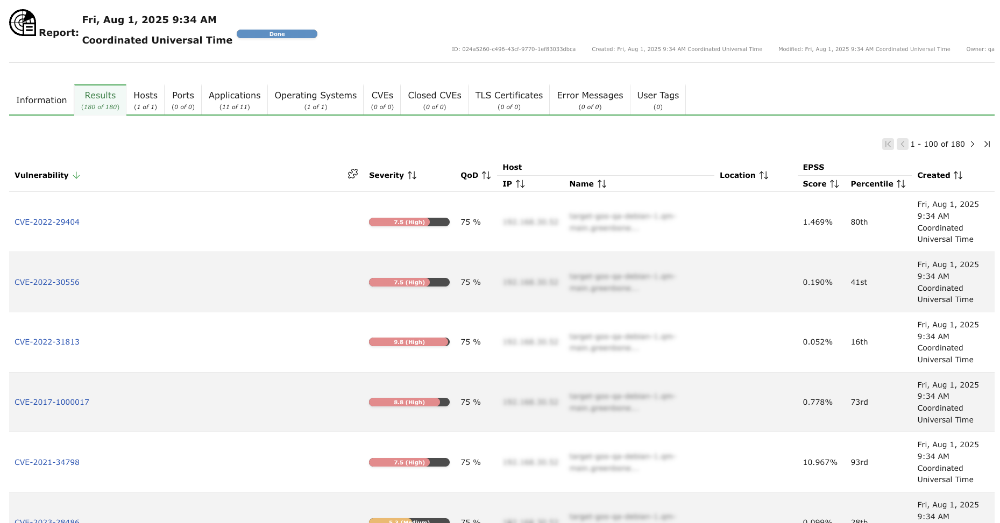
Рис. 9.21 Результаты сканирования CVE¶
Нажмите на CVE, чтобы отобразить подробную информацию о нем (см. Рис. 9.22).
Кончик
Доступные действия на этой странице см. в главе. 10.2.1.
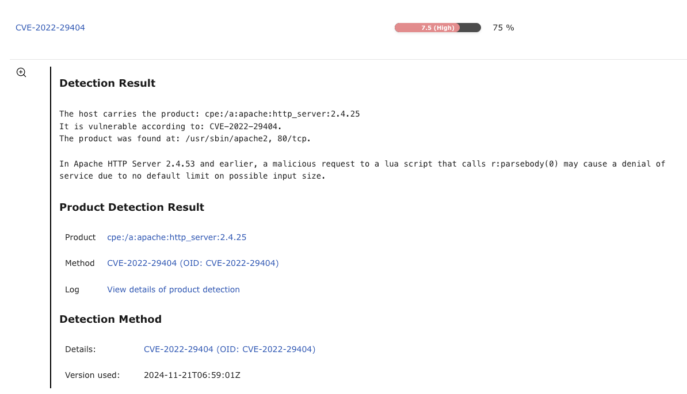
Рис. 9.22 Подробности об обнаруженном CVE¶


9.5 Использование задач импорта¶
9.5.1 Создание задачи импорта¶
Задачу импорта можно использовать для импорта и предоставления отчетов, созданных на других устройствах.
Задачу импорта можно создать следующим образом:
Выбирать Сканирование > Задачи в меню.
Нажмите
и выбрать Новая задача импорта раскрывающийся список.Введите имя задачи импорта в поле ввода. Имя (видеть Рис. 9.23).
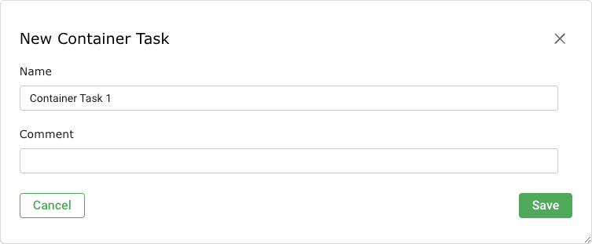
Рис. 9.23 Создание задачи импорта¶
Нажмите Сохранять.
Чтобы добавить отчет в задачу импорта, нажмите кнопку
 в строке задачи импорта.
в строке задачи импорта.Нажмите Просматривать… и выберите XML-файл отчета (см. Рис. 9.24).
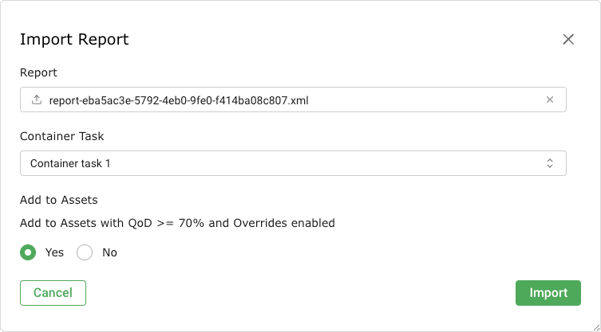
Рис. 9.24 Добавление отчета в задачу импорта¶
Выберите переключатель Да добавить отчет в активы (см. главу 12).
Нажмите Импорт.


9.5.2 Управление задачами импорта¶
Страница списка
Все существующие задачи импорта можно отобразить, выбрав Сканирование > Задачи в меню.

Для всех задач импорта доступны следующие действия:
- Импортируйте отчеты в задачу импорта.
- Переместите задачу импорта в корзину.
- Отредактируйте задачу импорта.
- Клонируйте задачу импорта.
- Экспортируйте задачу импорта в файл XML.
Примечание
Нажав или под списком задач можно одновременно переместить в корзину или экспортировать более одной задачи. Раскрывающийся список используется для выбора задач, которые нужно переместить в корзину или экспортировать.
Страница раскрыта
Нажмите на название задачи импорта, чтобы отобразить подробную информацию о задаче импорта. Нажмите чтобы открыть страницу сведений о задаче импорта.
Доступны следующие вкладки:
- Информация
Общие сведения о задаче импорта.
- Пользовательские теги
Присвоенные теги (см. главу 7.4).
- Разрешения
Назначенные разрешения (см. главу 8.4).
В левом верхнем углу пульта доступны следующие действия:
- Ознакомьтесь с соответствующим главой руководства пользователя.
- Показать страницу списка всех задач импорта.
- Создайте новую задачу (см. главу 9.2.2) или задачу импорта (см. главу 9.5).
- Клонируйте задачу импорта.
- Отредактируйте задачу импорта.
- Переместите задачу импорта в корзину.
- Экспортируйте задачу импорта в файл XML.
- Импортируйте отчеты в задачу импорта.
 Показать последний отчет для задачи импорта или показать все отчеты для задачи импорта.
Показать последний отчет для задачи импорта или показать все отчеты для задачи импорта. Покажите результаты задачи импорта.
Покажите результаты задачи импорта. Показать примечания к задаче импорта.
Показать примечания к задаче импорта. Показать переопределения для задачи импорта.
Показать переопределения для задачи импорта.
9.6 Управление целями¶
Страница списка
Все существующие цели можно отобразить, выбрав Конфигурация > Цели в меню.
Для всех целей отображается следующая информация:
- Имя
Имя цели.
- Хозяева
Хосты, которые сканируются, если цель используется для сканирования (см. главу 9.2.2).
- IP-адреса
Количество сканируемых хостов.
- Список портов
Список портов, используемый, если цель используется для сканирования (см. главу 9.2.2).
- Реквизиты для входа
Учетные данные, настроенные для цели.
Для всех целей доступны следующие действия:
- Переместите цель в мусорную корзину. В корзину можно переместить только те цели, которые в данный момент не используются.
- Отредактируйте цель.
- Клонируйте цель.
- Экспортируйте цель в виде XML-файла.
Примечание
Нажав или под списком целей можно переместить в корзину или экспортировать более одной цели одновременно. Раскрывающийся список используется для выбора целей, которые нужно переместить в корзину или экспортировать.
Страница раскрыта
Нажмите на имя цели, чтобы отобразить подробную информацию о цели. Нажмите чтобы открыть страницу сведений о цели.
Доступны следующие вкладки:
- Информация
Общая информация о цели.
- Пользовательские теги
Присвоенные теги (см. главу 7.4).
- Разрешения
Назначенные разрешения (см. главу 8.4).
В левом верхнем углу пульта доступны следующие действия:
- Ознакомьтесь с соответствующим главой руководства пользователя.
- Показать страницу списка всех целей.
- Создайте новую цель (см. главу 9.2.1).
- Клонируйте цель.
- Отредактируйте цель.
- Переместите цель в мусорную корзину. В корзину можно переместить только те цели, которые в данный момент не используются.
- Экспортируйте цель в виде XML-файла.
9.7 Создание списков портов и управление ими¶
Если приложения запускаются на необычных портах и их необходимо отслеживать и тестировать с помощью устройства, списки портов по умолчанию следует адаптировать. При необходимости можно создать индивидуальный список портов, включающий нужный порт.
Все списки портов по умолчанию от «Ак Шумкар» представляют собой объекты данных, которые распространяются через фид. Они загружаются и обновляются при каждом обновлении канала.
Если списки портов по умолчанию недоступны, возможно, необходимо обновить канал или установить владельца импорта канала (см. главу 6.2.1.10.1).
Списки портов по умолчанию редактировать нельзя. Кроме того, их может временно удалить только владелец импорта фида или суперадминистратор. При следующем обновлении фида они будут загружены снова.
Примечание
Чтобы навсегда удалить список портов по умолчанию, владелец импорта фида должен удалить его. После этого необходимо изменить владельца импорта фида на (Не установлено) (см. главу 6.2.1.10.1).
В дополнение к спискам портов по умолчанию можно создавать собственные списки портов (см. главу 9.7.1) или импортированный (см. главу 9.7.2).
9.7.1 Создание списка портов¶
Новый список портов можно создать следующим образом:
Выбирать Конфигурация > Списки портов в меню.
Нажмите
.Определите список портов (см. Рис. 9.25).
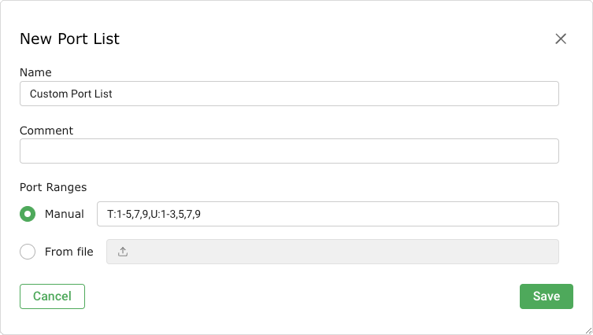
Рис. 9.25 Создание нового списка портов¶
Нажмите Сохранять.

Могут быть определены следующие детали списка портов:
- Имя
Определение имени. Имя можно выбрать произвольно.
- Комментарий
Необязательный комментарий может оставить дополнительную информацию.
- Диапазоны портов
Ручной диапазон ввода портов или диапазон импорта портов. При вводе вручную диапазоны портов разделяются запятыми. При импорте из файла записи можно разделить запятыми или разрывами строки. В файле должна быть использована кодировка символов ASCII.
Каждое значение в списке может относиться к одному порту (например,
7) или диапазон портов (например9-11). Эти варианты могут быть смешанными (например,5, 7, 9-11, 13).Запись в список может предшествовать спецификации протокола (
Т:для TCP,У:для UDP), напримерТ:1-3, У:7, 9-11(порты TCP 1, 2 и 3, порты UDP 7, 9, 10 и 11). Если специтор не указал, гарантия по ПТС.
9.7.2 Импорт списка портов¶
Список портов можно импортировать следующим образом:
Выбирать Конфигурация > Списки портов в меню.
Нажмите
 .
.Нажмите Просматривать… и выберите XML-файл списка портов.
Нажмите Импорт.
→ Список импортированных портов отображается на странице Списки портов.
9.7.3 Управление списками портов¶
Страница списка
Все созданные порты можно отобразить, выбрав Конфигурация > Списки портов в меню.
Для всех списков портов отображается следующая информация:
- Имя
Имя списка портов.
- Количество портов – всего
Общее количество портов в списке портов.
- Количество портов — TCP
Количество TCP-портов в списке портов.
- Количество портов – UDP
Количество портов UDP в списке портов.
Для всех списков портов доступны следующие действия:
- Переместите список портов в корзину. В корзину можно переместить только те указанные порты, которые в данный момент не использовались. Пока список портов не удален из корзины, он не будет заново загружен при следующем обновлении фиды.
- Отредактируйте список портов. Редактировать можно только самостоятельно созданные управляемые порты, которые на данный момент не используются.
- Клонируйте список портов.
- Экспортируйте список портов в видео XML-файла.
Примечание
Нажав или под списком списка портов можно переместить в корзину или экспортировать более одного списка портов одновременно. Раскрывающийся список используется для выбора того, какие порты будут перенесены в корзину или экспортированы.
Страница раскрыта
Нажмите на название списка портов, чтобы отобразить подробную информацию о списке портов. Нажмите чтобы открыть страницу, опишите список портов.
Доступны следующие вкладки:
- Информация
Общая информация о списке портов.
- Диапазоны портов
Все виды портов, включенные в этот список портов. Ображаются первый и последний порты связи, а также спецификатор протокола.
- Пользовательские теги
Присвоенные теги (см. главу 7.4).
- Разрешения
Назначенные разрешения (см. главу 8.4).
В левом верхнем углу пульта доступны следующие действия:
- Ознакомьтесь с соответствующим главой руководства пользователя.
- Показать страницу списка всех списков портов.
- Создать новый список портов (см. главу 9.7.1).
- Клонируйте список портов.
- Отредактируйте список портов. Редактировать можно только самостоятельно созданные управляемые порты, которые на данный момент не используются.
- Переместите список портов в корзину. В корзину можно переместить только те указанные порты, которые в данный момент не использовались. Пока список портов не удален из корзины, он не будет заново загружен при следующем обновлении фиды.
- Экспортируйте список портов в видео XML-файла.
9.8 Управление задачами¶
Страница списка
Все возникающие задачи можно отобразить, выбрав Сканирование > Задачи в меню.

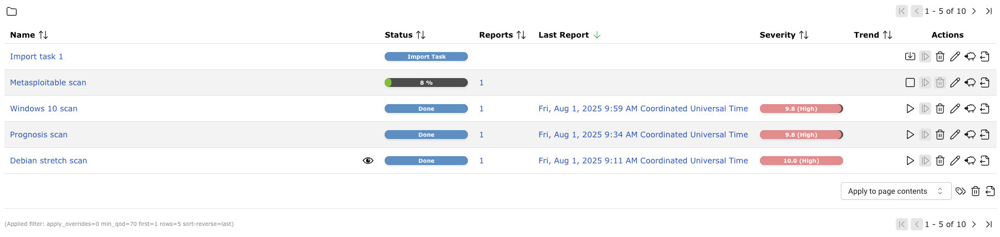
Рис. 9.26 Страница Задачи решение всех задач¶
По всем задачам отображается следующая информация:
- Имя
Название задачи. Могут быть использованы следующие значения:
 Задача помечена как изменяемая. Программную задачу, сканер и настройку можно выполнить самостоятельно, даже если отчеты уже были созданы.
Задача помечена как изменяемая. Программную задачу, сканер и настройку можно выполнить самостоятельно, даже если отчеты уже были созданы. Задача настроения главы для запуска на удаленном сканере (см. 15).
Задача настроения главы для запуска на удаленном сканере (см. 15). Задача видна одним или приготовлением другими пользователями.
Задача видна одним или приготовлением другими пользователями. Задача принадлежит другому пользователю.
Задача принадлежит другому пользователю.- Статус
Текущий статус задачи. Возможны следующие состояния:
 Для задачи нет прогонов/отчетов.
Для задачи нет прогонов/отчетов. Задача только началась.
Устройство готовит сканер.
Задачи с этим статусом нельзя остановить, возобновить или удалить.
Задача только началась.
Устройство готовит сканер.
Задачи с этим статусом нельзя остановить, возобновить или удалить. Добавлена задача в очередь ожидания.
В некоторых случаях оно может остаться в очереди.
Для получения дополнительной информации см. главу 16.3.
Добавлена задача в очередь ожидания.
В некоторых случаях оно может остаться в очереди.
Для получения дополнительной информации см. главу 16.3. Задача в настоящее время достигнута.
Процентное значение основано на количестве VT, выполненных на выбранных хостах.
По этой причине ценность не обязательно коррелирует с затраченным временем.
Задача в настоящее время достигнута.
Процентное значение основано на количестве VT, выполненных на выбранных хостах.
По этой причине ценность не обязательно коррелирует с затраченным временем. Задача сканирования или загрузки импорта завершена, и устройство обрабатывает данные.
Задачи с этим статусом нельзя остановить, возобновить или удалить.
Задача сканирования или загрузки импорта завершена, и устройство обрабатывает данные.
Задачи с этим статусом нельзя остановить, возобновить или удалить. Задача выполнена успешно.
Задача выполнена успешно. Недавно было предложено остановить выполнение задачи.
Однако сканирующее излучение пока не ответило на этот запрос.
Задачи с этим статусом нельзя остановить, возобновить или удалить.
Недавно было предложено остановить выполнение задачи.
Однако сканирующее излучение пока не ответило на этот запрос.
Задачи с этим статусом нельзя остановить, возобновить или удалить. Задача была остановлена.
Последний отчет, возможно, еще не завершен.
Дополнительными причинами этого состояния могут быть перезагрузка устройства или отключение электроэнергии.
После перезапуска сканера задача возобновится автоматически.
Задача была остановлена.
Последний отчет, возможно, еще не завершен.
Дополнительными причинами этого состояния могут быть перезагрузка устройства или отключение электроэнергии.
После перезапуска сканера задача возобновится автоматически. Задача была удалена.
Сам процесс удаления может занять некоторое время, поскольку отчеты также необходимо удалить.
Задачи с этим статусом нельзя остановить, возобновить или удалить.
Задача была удалена.
Сам процесс удаления может занять некоторое время, поскольку отчеты также необходимо удалить.
Задачи с этим статусом нельзя остановить, возобновить или удалить. Произошла ошибка, и проблема была прервана.
Последний отчет, возможно, еще не завершен или вообще отсутствует.
Произошла ошибка, и проблема была прервана.
Последний отчет, возможно, еще не завершен или вообще отсутствует.- Отчеты
Объем отчета по задаче. При рассмотрении количества страниц с отчетами Отчеты открыт. Применяется фильтр, позволяющий отображать только отчеты для выбранной задачи.
- Последний отчет
Дата и время последнего отчета. При появлении она открыла страницу с последним отчетом.
- Серьезность
Качественная мера серьезности уязвимостей согласно Общей системе обнаружения уязвимостей (CVSS) (см. главу) 13.2.3). Эта оценка серьезности, которая включает в себя число от 0,0 до 10,0, где 10,0 соответствует самой серьезной степени, а также серьезному классу, основанному на этом измерении:
Критический: 9,0–10,0
Высокий: 7,0–8,9
Средний: 4,0–6,9
Низкий: 0,1–3,9
Журнал: 0.0
Отображается серьезная серьезность, обнаруженная при сканировании.
- Тренд
Изменение уязвимостей между новейшим и вторым новейшим отчетом (см. главу) 10.5).
Для всех задач доступны следующие действия:
- Запустите задачу. Запустить можно только не активированные в данный момент задачи.
 Остановить текущую задачу. Все обнаруженные результаты будут проведены в базах данных.
Остановить текущую задачу. Все обнаруженные результаты будут проведены в базах данных.- Показать детали назначенного расписания (доступно только для запланированных задач, см. главу) 9.10).
 Возобновите остановленную задачу. Все незавершенные хосты сканируются полностью заново. Данные хостов, которые уже были полностью просканированы, являются основными.
Возобновите остановленную задачу. Все незавершенные хосты сканируются полностью заново. Данные хостов, которые уже были полностью просканированы, являются основными.- Переместите задачу в корзину.
- Отредактируйте задачу.
- Клонируйте задачу.
- Экспортируйте задачу в видео XML-файла.
Примечание
Нажав или под списком задач можно одновременно переместить в корзину или экспортировать более одной задачи. Раскрывающийся список используется для выбора задач, которые нужно переместить в корзину или экспортировать.
Страница раскрыта
Нажмите на название задачи, чтобы отобразить подробную информацию о задаче. Нажмите чтобы открыть страницу, раскрыть проблему.
Доступны следующие вкладки:
- Информация
Общая информация о проблеме.
- Пользовательские теги
Присвоенные теги (см. главу 7.4).
- Разрешения
Назначенные разрешения (см. главу 8.4).
В левом верхнем углу пульта доступны следующие действия:
- Ознакомьтесь с соответствующим главой руководства пользователя.
- Показать страницу списка всех задач.
- Создайте новую задачу (см. главу 9.2.2) или задачу импорта (см. главу 9.5).
- Клонируйте задачу.
- Отредактируйте задачу.
- Переместите задачу в корзину.
- Экспортируйте задачу в видео XML-файла.
- Запустите задачу. Запустить можно только не активированные в данный момент задачи.
- Остановить текущую задачу. Все обнаруженные результаты будут проведены в базах данных.
- Возобновите остановленную задачу. Все незавершенные хосты сканируются полностью заново. Данные хостов, которые уже были полностью просканированы, являются основными.
- Показать последний отчет по задаче или показать все отчеты по задаче.
- Покажите результаты выполнения задачи.
- Укажите примечания к задаче.
- Укажите переопределение для задачи.
9.8.1 Предоставление разрешений для задачи¶
На странице описываются задачи разрешения, которыми можно управлять следующим образом:
Примечание
По умолчанию обычные пользователи не могут создавать разрешения для других пользователей, поскольку у них нет доступа к базе данных пользователей. Чтобы иметь возможность создавать разрешения для других пользователей, у пользователя должны быть глобальные и особые права. get_users разрешение (см. главу 8.4.3).
Выбирать Сканирование > Задачи в меню.
Нажмите на название задачи, чтобы отобразить подробную информацию о задаче. Нажмите
чтобы открыть страницу, раскрыть проблему.Нажмите на описание Разрешения.
В разделе Разрешения, нажмите
.Выберите тип разрешения раскрывающегося списка. Грант.
Выберите переключатель Пользователь, Группа или Роль и выберите пользователя/роль/группу в соответствующем раскрывающемся списке (см. Рис. 9.27).

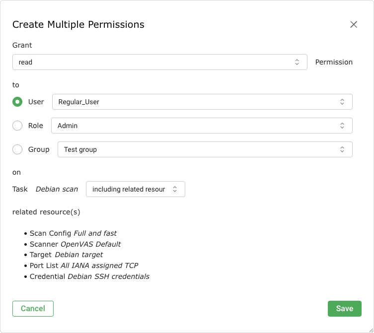
Рис. 9.27 Создание нового разрешения¶
Нажмите Сохранять.
→ Разрешение отображается на странице описания проблемы (см. Рис. 9.28).
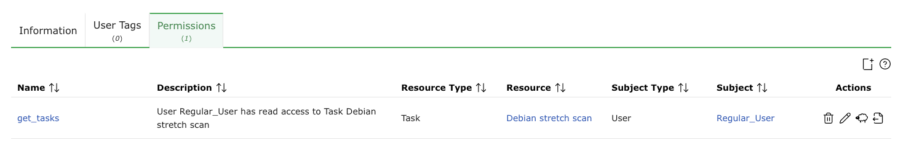
Рис. 9.28 Разрешение отображается на странице описания проблемы.¶

После входа в систему пользователь может увидеть задачу и получить доступ к соответствующим отчетам.
9.9 Настройка и управление настройками¶
Конфигурация позволяет установить набор сетевого оборудования, которое выполняется во время оказания услуг. Он также содержит общие и очень характерные (экспертные) параметры для серверов и некоторых виртуальных терминалов.
Устройство соединения с различными предустановленными конфигурациями. Их можно настроить и создать новый проект.
9.9.1 Конфигурации настройки по умолчанию¶
Все оформления по умолчанию от «Ак Шумкар» представляют собой объекты данных, которые подлежат рассмотрению через фид. Они загружаются и обновляются при каждом обновлении канала.
Если настройка устройства по умолчанию отключена, может произойти повторное обновление канала или установка владельцем импортного канала (см. главу). 6.2.1.10.1).
Конфигурации по умолчанию нельзя. Кроме того, их может временно удалить только владелец-импортёр фида или суперадминистратор. При следующем обновлении фида они будут загружены снова.
Примечание
Чтобы удалить конфигурацию по умолчанию, владелец импортной ленты должен удалить ее. После этого владельцу необходимо изменить импорт фида на (Не установлено) (см. главу 6.2.1.10.1).
Примечание
Конфигурации внешних конфигураций по умолчанию могут быть созданы пользователем. 9.9.2) или импортированный (см. главу 9.9.3).
По умолчанию доступны следующие конфигурации конфигурации:
- Пустой
Этот внешний вид представляет собой пустой шаблон, а не монолитную машину. Его можно клонировать и использовать для создания полностью индивидуальной конфигурации.
Семейства VT являются статическими, что означает, что новые выбранные семейства VT не включаются и не используются автоматически.
- База
В этом соединении используются только виртуальные машины, которые собирают информацию о выключателе системы. Никаких уязвимостей не выявлено. Его можно клонировать и использовать для создания полностью индивидуальной конфигурации.
использовать сканер портов Пинг-хост который определяет, жив ли хост. Дополнительная информация о внешней системе.
Семейства VT являются статическими, что означает, что новые выбранные семейства VT не включаются и не используются автоматически.
- Открытие
В этом кабинете используются только виртуальные машины, обеспечивающие информацию о консольной системе. Никаких уязвимостей не выявлено.
Кроме того, собранная информация содержит информацию об открытых портах, используемом оборудовании, межсетевых экранах, используемых службах, установленном программном обеспечении и сертификатах. Система полностью инвентаризирована.
Семейства VT являются алгоритмами, что означает, что новые выбранные семейства VT подключаются и используются автоматически.
- Внешнее хоста
Этот вариант используется для поиска целевых систем. Никаких уязвимостей не выявлено.
использовать сканер портов Пинг-хост который определяет, жив ли хост.
Семейства VT являются статическими, что означает, что новые выбранные семейства VT не включаются и не используются автоматически.
- Обнаружение системы
Это преобразование используется для обнаружения целевых систем, включая установленные операционные системы и используемое оборудование. Никаких уязвимостей не выявлено.
использовать сканер портов Пинг-хост который определяет, жив ли хост.
Семейства VT являются статическими, что означает, что новые выбранные семейства VT не включаются и не используются автоматически.
- Полный и быстрый
Для многих сред это лучший вариант для начала.
Это формируется на основе информации, созданной при предыдущем сканировании портов, и использует почти все виртуальные терминалы. Используются только VT, которые не вредят целевой системе. VT применяются таким образом, чтобы максимально снизить потенциальный уровень ложноотрицательных результатов. Другие «полные» схемы лучше использовать только в редких случаях, но требуют гораздо большего прогресса.
Семейства VT являются алгоритмами, что означает, что новые выбранные семейства VT подключаются и используются автоматически.
- Полный и быстрый ульт
Это приводит к изменению конфигурации. Полный и быстрый с виртуальными терминалами, которые могут нарушить работу служб или систем или даже вызвать остановку работы.
Семейства VT являются алгоритмами, что означает, что новые выбранные семейства VT подключаются и используются автоматически.
Такая конфигурация алгоритма не всегда может быть абсолютно надежной в зависимости от условий окружающей среды, что может отражаться на более высоком уровне ложноположительных результатов. Для проведения расчетов ложноположительных крайних случаев можно использовать ручной анализ и установку переопределений (см. главу). 10.8).
- Полный и очень глубокий
Это решение на основе составления отчета Полный и быстрый но результаты поиска портов или поиска приложений/сервисов не влияют на выбор виртуальных терминалов. Поэтому используются ВТ, которые ждут таймаута или тестируют уязвимости приложения/сервиса, которые не были обнаружены ранее. Сканирование с такой конфигурацией происходит очень медленно.
Семейства VT являются алгоритмами, что означает, что новые выбранные семейства VT подключаются и используются автоматически.
- Полный и очень глубокий ульт
Это приводит к изменению конфигурации. Полный и очень глубокий с опасными виртуальными терминалами, которые могут вызвать сбои в обслуживании или системе. Сканирование с такой конфигурацией происходит очень медленно.
Семейства VT являются алгоритмами, что означает, что новые выбранные семейства VT подключаются и используются автоматически.
Такая конфигурация алгоритма не всегда может быть абсолютно надежной в зависимости от условий окружающей среды, что может отражаться на более высоком уровне ложноположительных результатов. Для проведения расчетов ложноположительных крайних случаев можно использовать ручной анализ и установку переопределений (см. главу). 10.8).
9.9.2 Составление проекта¶
Примечание
Любая пользовательская настройка сканера. Safe_checks установлен на нет (см. главу 9.9.4.1) не всегда может быть абсолютно надежным в зависимости от условий окружающей среды, что может отражаться на повышенном уровне ложноположительных результатов. Для проведения расчетов ложноположительных крайних случаев можно использовать ручной анализ и установку переопределений (см. главу). 10.8).
Новую конфигурацию можно создать следующим образом:
Выбирать Конфигурация > Конфигурации случайно в меню.
Нажмите
.Примечание
Альтернативно, конфигурацию можно импортировать (см. главу 9.9.3).
Введите имя в поле ввода. Имя (видеть Рис. 9.29).
Выберите переключатель базы, которую следует использовать.
Его можно выбрать между База с отличным набором НВТ, Пустой, статичный и быстрый, Полный и быстрый и ранее созданную конфигурацию получилось.
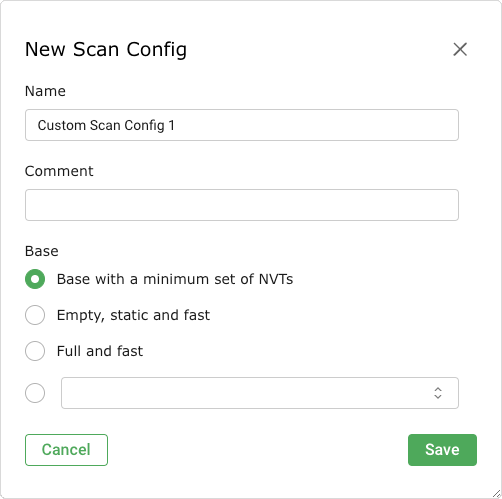
Рис. 9.29 Создание нового проекта оформления¶
Нажмите Сохранять.
→ Конфигурация создается и отображается на странице Сканировать конфигурацию.
В строке конфигурации косая кнопка для редактирования конфигурации конфигурации конфигурации, имеющейся в семействе VT Настройки.
Альтернативно, настройки можно также отредактировать, выполнив шаги с 7 по 14 для встроенного VT. Настройки.
Нажмите
для редактирования всех семейств VT, VT, настроек сканера и настроек VT.Примечание
Строку поиска в верхней части внешнего окна можно использовать для поиска семейства VT, сканера и настроек VT.
В разделе Редактирование наборов тестов сетевых уязвимостей выберите переключатель
 если вновь представленные компоненты VT должны быть включены и активированы автоматически (см. Рис. 9.30).
если вновь представленные компоненты VT должны быть включены и активированы автоматически (см. Рис. 9.30).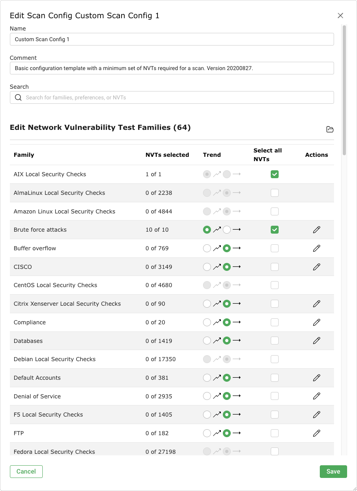
Рис. 9.30 Редактирование новой конфигурации офиса¶
В разделе Редактирование наборов тестов сетевых уязвимостей активируйте галочки в столбце Выбрать все НВТ если все компоненты ВТ должны быть активированы.
Нажмите
для содержания ВТ, чтобы его отредактировать (см. Рис. 9.31).Примечание
Следующие следующие ВТ-режим нельзя:
Локальные проверки безопасности AIX
AlmaLinux локальные проверки безопасности
Проверки локальной безопасности Amazon Linux
Проверки локальной безопасности Arch Linux
Проверки локальной безопасности CentOS
Локальные проверки безопасности Debian
Локальные проверки безопасности Fedora
Проверки локальной безопасности FreeBSD
Локальные проверки безопасности Gentoo
Проверки локальной безопасности HCE
Локальные проверки безопасности HP-UX
Локальные проверки безопасности Huawei EulerOS
Проверка локальной безопасности Mageia Linux
Проверка локальной безопасности Mandrake
Проверки локальной безопасности Oracle Linux
Проверки локальной безопасности Red Hat
Проверки локальной безопасности Rocky Linux
Локальные проверки безопасности Slackware
Проверки локальной безопасности Solaris
Локальные проверки безопасности SuSE
Проверки локальной безопасности Ubuntu
Проверки локальной безопасности Windows
openEuler локальные проверки безопасности
openSUSE локальные проверки безопасности
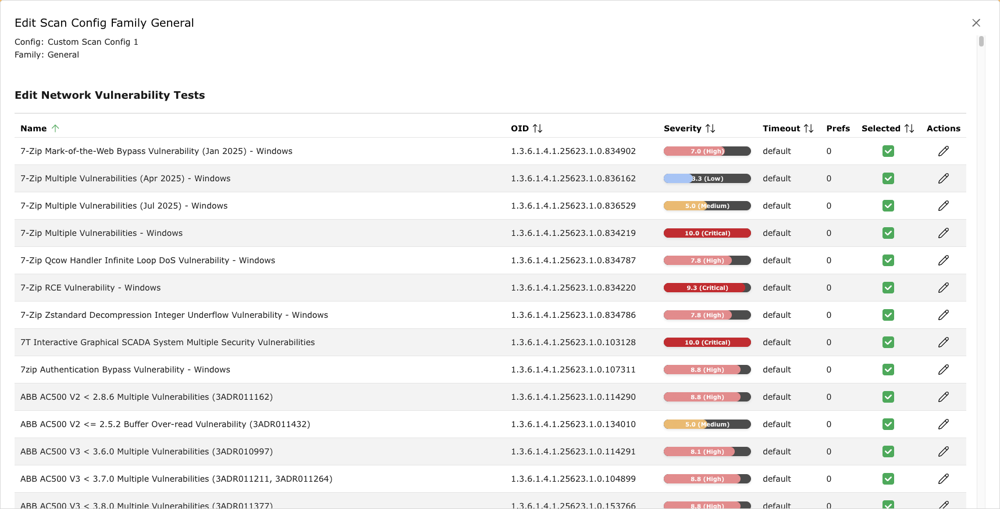
Рис. 9.31 Редактирование группы ВТ¶
В столбце Выбрано Активируйте флажки тех ВТ, которые должны быть активированы.
Примечание
Работали локальные проверки безопасности (LCS) на основе пакетов, VT Определите ОС и список настроенных пакетов через вход по SSH. (OID: 1.3.6.1.4.1.25623.1.0.50282) должен быть активирован.
Нажмите
чтобы ВТ мог его отредактировать (см. Рис. 9.32).Примечание
Если редактирование VT включает загрузку текстового файла, файл должен использовать текстовую кодировку UTF-8.
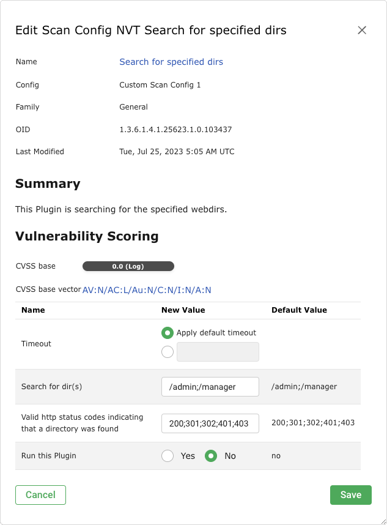
Рис. 9.32 Редактирование ВТ¶
Нажмите Сохранять спасти ВТ.
Нажмите Сохранять спасти семью ВЦ.
Необязательно: отредактируйте настройки сканера (см. главу 9.9.4).
Необязательно: отредактируйте настройки VT (см. главу 9.9.5).
Нажмите Сохранять для сохранения финансовой структуры.


9.9.3 Импорт формального оформления¶
Примечание
Импортировать следует только конфигурацию устройства, созданного с помощью используемой на данный момент версии GOS. Импортирование конфигураций из других версий ГСН может привести к появлению сообщений о пожаре или непредвиденному поведению.
Любая пользовательская настройка сканера. Safe_checks установлен на нет (см. главу 9.9.4.1) не всегда может быть абсолютно надежным в зависимости от условий окружающей среды, что может отражаться на повышенном уровне ложноположительных результатов. Для проведения расчетов ложноположительных крайних случаев можно использовать ручной анализ и установку переопределений (см. главу). 10.8).
Конфигурацию можно импортировать следующим образом:
Выбирать Конфигурация > Конфигурации случайно в меню.
Нажмите
.Нажмите Просматривать… и выберите XML-файл конфигурации.
Нажмите Импорт.
Примечание
Если имя импортированной конфигурации уже существует, к имени добавляется числовой суффикс.
→ Импортированная преобразованная программа отображается на странице Сканировать конфигурацию.
Выполните шаги с 6 по 16 главы. 9.9.2 для редактирования конфигурации.
9.9.4 Редактирование настроек сканера¶
Настройки сканера можно сохранить следующим образом:
Выбирать Конфигурация > Конфигурации случайно в меню.
В строке конфигурации косая кнопка
.В разделе Изменить настройки сканера щелкнуть чтобы изменить настройки сканера (см. Рис. 9.33).
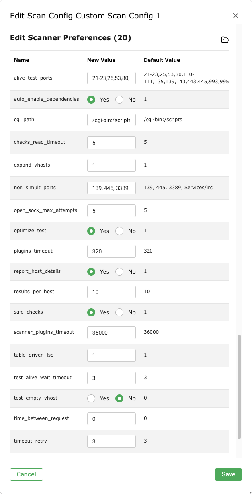
Рис. 9.33 Редактирование настроек сканера¶
После редактирования настроек сканера нажмите Сохранять для сохранения финансовой структуры.


9.9.4.1 Описание настроек сканера¶
Примечание
Документирование всех настроек сканера приведено в данной рамке документа. Описаны только самые важные настройки сканера.
Недокументированные настройки также могут быть признаны конфиденциальными, несмотря на то, что они все еще продолжаются. Эти предпочтения будут выбираться сканером, и на них не следует обращать внимание.
live_test_ports: TCP-порты, используйте переносной сканер Boreas для живого теста. Этот параметр влияет только на действующие методы тестирования. Пинг-сервис TCP-ACK и Пинг-служба TCP-SYN. Можно настроить только допустимые порты (диапазон портов 0–65535). Если настроение неверное, то зеленый сканер Борей использует порты по умолчанию.
auto_enable_dependenties: это устанавливает, автоматически активирует VT, который требует другого VT.
cgi_path: путь, который будет найден виртуальными машинами для доступа к CGI-скриптам.
checks_read_timeout: таймаут сетевых сокетов во время вызова.
test_alive_wait_timeout: тайм-аут для живого сканера Boreas, чтобы дождаться ответов после отправки последнего пакета. Укажите значения от 1 до 20.
test_empty_vhost: Сканер также сканирует цель, используя пустые значения виртуального хоста в дополнение к переменным значениям целей виртуального хоста.
max_sysload: максимальная нагрузка на прибор. Как только эта нагрузка будет достигнута, дальнейшее ТН не будет запускаться до тех пор, пока нагрузка снова не упадет ниже этого значения.
min_free_mem: создается доступный объем памяти (в МБ), который должен оставаться свободным на устройстве. Как только этот предел будет достигнут, дальнейшие VT не будут запускаться до тех пор, пока снова не станет достаточно памяти.
non_simult_ports: эти порты не проверяются одновременно виртуальными терминалами.
оптимизация_тест: VT запускается только при выполнении определенных предварительных условий (например, открытия портов или обнаруженного приложения).
плагины_timeout: максимальное время работы ВТ.
Safe_checks: Некоторые виртуальные терминалы могут привести к повреждению хост-системы. Эта настройка отвечает за VT.
Scanner_plugins_timeout: максимальное время работы (в секундах) для всех ВТ с поддержкой ВТ Сканеры портов. Если VT дольше работает, он останавливается.
expand_vhosts: В списке виртуальных хостов целевого объекта изменяется значения, полученные из таких источников, по запросу обратного поиска и проверки VT на наличие сертификатов SSL/TLS.
время_между_запросом: время ожидания (в миллисекундах) между двумя действиями, такими как открытие сокета TCP, отправка запроса через открытый сокет TCP и закрытие сокета TCP.
timeout_retry: количество повторов, если время подключения к сокету исчезнет.
несканированный_закрытый: При этом следует учитывать TCP-порты, которые не были просканированы, как закрытые порты.
unscanned_closed_udp: это определяет, следует ли считать порты UDP, которые не были просканированы, закрытыми.
9.9.5 Редактирование настроек VT¶
Выбирать Конфигурация > Конфигурации случайно в меню.
В строке конфигурации косая кнопка
.В разделе Настройки теста на уязвимость сети щелкнуть для редактирования настроек VT.
В строке настроек VT нажмите
.Отредактируйте изменение VT.
Нажмите Сохранять чтобы сохранить сохранение VT.
Нажмите Сохранять для сохранения финансовой структуры.
9.9.5.1 Описание настроек VT¶
Примечание
Документирование всех предпочтений VT находится в рамках этого документа. На данный момент захвачены только настройки VT-сканера портов Nmap и Ping Host.
9.9.5.1.1 Предпочтения ВТ Пинг-хост¶
ВТ Пинг-хост в семье ВТ Сканеры портов содержит следующие параметры конфигурации:
Отчет о доступных хостах: это установлено, должен быть указан хост, обнаруженный этим VT.
9.9.5.1.2 Предпочтения ВТ Nmap (обертка NASL)¶
Следующие варианты VT Nmap (обертка NASL) в семье ВТ Сканеры портов будет напрямую передавать параметры при выполнении команды Nmap. Дополнительную информацию можно найти в документация для Nmap.
Не меняйте порядок портов в случайном порядке.: Nmap просканирует порты в порядке возрастания.
Не сканировать цели, которых нет в файле: видеть Файл, результаты grepable.
Фрагментировать IP-пакеты: Nmap фрагментирует пакеты действий. Это позволяет обходить пакеты простых фильтров.
Определите удаленную ОС: Nmap пытается определить операционную систему.
Сканирование портов RPC: Nmap теперь содержит информацию о наличии портов Sun RPC.
Запускайте опасные порты, даже если установлены безопасные проверки.: Сканирование UDP и RPC может вызывать проблемы и обычно отключается с помощью настройки. Safe_checks. С помощью этой настройки их можно отключить в любом случае.
Сервисное сканирование: Nmap пытается определить сервисы.
Используйте скрытую опцию для идентификации удаленной ОС: Nmap использует определения более агрессивно.
Длина данных: Nmap добавляет в пакет случайные данные указанной длины.
Тайм-аут хоста: тайм-аут хоста.
Начальный тайм-аут RTT: начальный тайм-аут туда и обратно. Nmap может настроить этот таймаут в зависимости от результатов.
Максимальный тайм-аут RTT: максимальное RTT.
Мин. тайм-аут РТТ: минимальное РТТ.
Макс. повторов: максимальное количество повторов.
Максимальное время ожидания между зондами: это регулирует скорость резко.
Минимальное время ожидания между зондами: это регулирует скорость резко.
Порты сканируются параллельно (макс.): это определяет, сколько портов должно сканироваться одновременно.
Порты сканируются параллельно (мин): это определяет, сколько портов должно сканироваться одновременно.
Исходный порт: исходный порт. Это представляет интерес при сканировании через брандмауэр, если вообще разрешены соединения с определенным портом.
Файл, результаты grepable: Позволяет получить файл, включить запись строки в видео
Хозяин: ИП адрес. Если вариант Не сканировать цели, которых нет в файле Установлено, что при этом сканируются только системы, содержащиеся в файле.Метод TCP-сканирования: актуальная техника.
Временная политика: Вместо индивидуального изменения параметров синхронизации можно изменить политику синхронизации.
Политика синхронизации использует следующие значения:
параноик |
Подлый |
Вежливый |
Нормальный |
Агрессивный |
Безумный |
|
|---|---|---|---|---|---|---|
Initial_rtt_timeout |
5 минут |
15 с |
1 с |
1 с |
500 мс |
250 мс |
min_rtt_timeout |
100 мс |
100 мс |
100 мс |
100 мс |
100 мс |
50 мс |
max_rtt_timeout |
10 с |
10 с |
10 с |
10 с |
1250 мс |
300 мс |
max_parallelism |
сериал |
сериал |
сериал |
параллельный |
параллельный |
параллельный |
scan_delay |
5 минут |
15 с |
400 мс |
0 с |
0 с |
0 с |
max_scan_delay |
1 с |
1 с |
1 с |
1 с |
10 мс |
5 мс |
9.9.6 Управление преобразованиями¶
Страница списка
Все варианты оформления можно отобразить, выбрав Конфигурация > Конфигурации случайно в меню (см. Рис. 9.34).
Для всех конфигураций устройств отображается следующая информация:
- Имя
Имя оформления.
- Тип
Тип оформления.
- Семья – Всего
Количество активированных семейств VT для конфигурации.
- Семья – Тренд
Тенденция семейная ЖТ
Новые компоненты VT включаются и активируются автоматически после обновления фида. Это гарантирует, что новые виртуальные машины будут доступны немедленно и без какого-либо разрешения со стороны администратора. Новые модули VT не включаются автоматически после обновления фида.
Новые модули VT не включаются автоматически после обновления фида.- НВЦ – Всего
Количество активированных ВТ для конфигурации.
- НВЦ – Тренд
Тенденция ВЦ.
Новые VT из активированных семейств VT включаются и активируются автоматически после обновления канала. Это гарантирует, что новые виртуальные машины будут доступны немедленно и без какого-либо разрешения со стороны администратора. Новые VT не включаются автоматически после обновления фида.
Примечание
«Ак Шумкар» регулярно публикует новые ВТ. Новые компоненты ВТ также могут быть представлены через ПРЕДПРИЯТИЕ АК-ШУМКАР FEED.

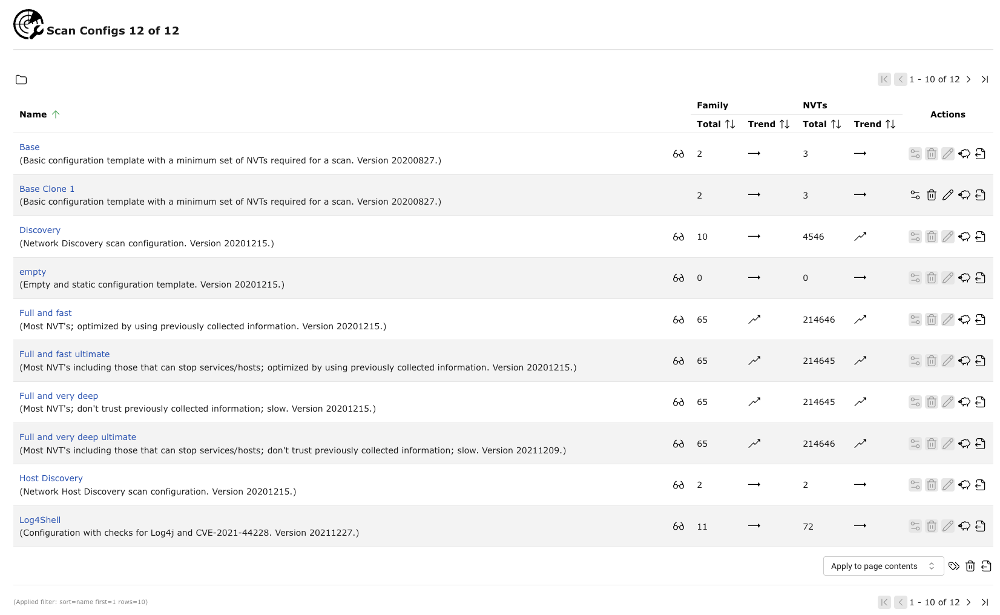
Рис. 9.34 Страница Сканировать конфигурацию выполнение всех доступных конфигураций¶
Для всех конфигураций доступны следующие действия:
Отредактируйте общие настройки конфигурации, то есть семейство VT. Настройки. Редактировать можно только самостоятельно созданные схемы конфигурации, которые в данный момент не использовались.
- Переместите конфигурацию в корзину. В корзину можно переместить только те макеты, которые в данный момент не использовались. Пока устройство не удалено из корзины, оно не загружается полностью при следующем обновлении фиды.
- Отредактируйте конфигурацию неожиданно. Редактировать можно только самостоятельно созданные схемы конфигурации, которые в данный момент не использовались.
- Клонируйте конфигурацию бесплатно.
- Экспортируйте конфигурацию в виде XML-файла.
Примечание
Нажав или под списком конфигураций можно одновременно переместить в корзину или экспортировать более одного офисного конфигурации.
Раскрывающийся список используется для выбора того, какие конфигурации перемещаются в корзину или экспортируются.
Страница раскрыта
Запросите имя запроса, чтобы отобразить подробную информацию о конфигурации проекта. Нажмите чтобы открыть страницу с описанием конфигурации.
Доступны следующие вкладки:
- Настройки сканера
Все настройки сканера для конфигурации с текущими значениями и значениями по умолчанию (см. главу 9.9.4.1).
- Семья НТВ
Все компоненты ВТ для конфигурации с количеством активированных ВТ и изменяются.
- Настройки НТВ
Все настройки VT для конфигурации (см. главу) 9.9.5.1).
- Пользовательские теги
Присвоенные теги (см. главу 7.4).
- Разрешения
Назначенные разрешения (см. главу 8.4).
В левом верхнем углу пульта доступны следующие действия:
- Ознакомьтесь с соответствующим главой руководства пользователя.
- Показать страницу со списком всех конфигураций.
- разработать конфигурацию (см. Главу 9.9.2).
- Клонируйте конфигурацию бесплатно.
- Отредактируйте конфигурацию неожиданно. Редактировать можно только самостоятельно созданные схемы конфигурации, которые в данный момент не использовались.
- Переместите конфигурацию в корзину. В корзину можно переместить только те макеты, которые в данный момент не использовались. Пока устройство не удалено из корзины, оно не загружается полностью при следующем обновлении фиды.
- Экспортируйте конфигурацию в виде XML-файла.
- Импортируйте конфигурацию внешне (см. главу 9.9.3).
9.10 Выполнение организованного формального¶
Для обеспечения непрерывного управления уязвимостями ручное выполнение задачи утомировано. Устройство поддерживает планирование задач для их автоматизации и автоматического планирования платежей с помощью адаптеров во время подключения. Их можно запустить один или несколько раз.
По умолчанию устройство не соблюдает никаких расписаний.
9.10.1 Создание расписания¶
Новое расписание можно составить следующим образом:
Выбирать Конфигурация > Расписания в меню.
Нажмите
.Определите график (см. Рис. 9.35).
Нажмите Сохранять.
→ Расписание создано и его можно выбрать при создании нового задания (см. главу 9.2.2).
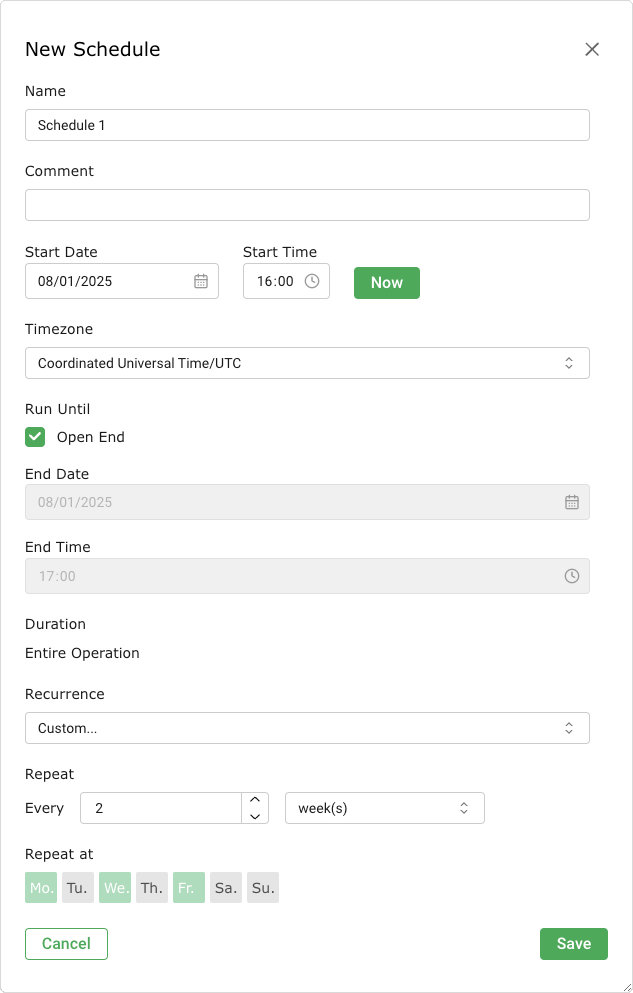
Рис. 9.35 Создание нового расписания¶

Можно быть уверенным в следующих деталях расписания:
- Имя
Определение имени. Имя можно выбрать произвольно.
- Комментарий
Необязательный комментарий может оставить дополнительную информацию.
- Часовой пояс
Определение часового пояса относится к времени. UTC±00:00 — значение по умолчанию.
Примечание
Поскольку устройство работает во внешнем часовом поясе UTC±00:00, выбранный часовой пояс очень важен. Для восточного стандартного времени (EST) Америка/Нью-Йорк должен быть выбран.
- Первый запуск
Определение даты и времени начала первого прибытия.
Нажав Таблицы можно выбрать. Нажав Сейчас текущая дата и время для первого запуска.
- Бежать до
Определение даты и времени окончания первого визита. Задачи с течением времени окончания нельзя запустить вручную.
Нажав Таблицы можно выбрать. Активируйте флажок Открытый конец чтобы оставить время окончания открытым.
- Продолжительность
Определение максимальной длительности выполнения задачи. Продолжительность зависит от заданного времени начала и окончания. Если определенное время окончания и назначенное время исчезло, проблема прерывается и будет причинена ущербу до тех пор, пока не станет доступным следующий запланированный временной интервал. Таким образом можно добиться, что диагноз всегда будет выполняться в ограниченном временном интервале (обслуживании).
- Повторение
Определение частоты повторения задания. Его можно выбрать между один раз, Ежечасно, Ежедневно, Еженедельно, Ежемесячно, Ежегодно, Рабочая неделя (с понедельника по пятницу) или Обычай. Если вариант Обычай выбранные, можно выбрать направления повторения и дни, в которых задача должна выполниться.
9.10.2 Управление расписаниями¶
Страница списка
Все возможные расписания можно отобразить, выбрав Конфигурация > Расписания в меню.
Для всех запланирований отображается следующая информация:
- Имя
Название расписания.
- Первый запуск
Время начала первого запуска задачи.
- Следующий запуск
Следующая задача запуска по текущей дате и времени.
- Повторение
Частота повторения задач.
- Продолжительность
Максимальная продолжительность выполнения задачи. Продолжительность зависит от заданного времени начала и окончания. Если определенное время окончания и назначенное время исчезло, проблема прерывается и будет причинена ущербу до тех пор, пока не станет доступным следующий запланированный временной интервал. Таким образом можно добиться, что диагноз всегда будет выполняться в ограниченном временном интервале (обслуживании).
Для всех запланированных доступны следующие действия:
- Переместите расписание в корзину. В корзину можно переместить только те расписания, которые в данный момент не использовались.
- Отредактируйте расписание.
- Клонируйте расписание.
- Экспортируйте расписание в видео XML-файл.
Примечание
Нажав или под списком расписаний можно одновременно переместить в корзину или экспортировать более одного расписания. Раскрывающийся список используется для выбора раскрывающихся элементов, которые необходимо переместить в корзину или экспортировать.
Страница раскрыта
Нажмите на название расписания, чтобы отобразить подробную информацию о расписании. Нажмите чтобы открыть страницу подробного расписания.
Доступны следующие вкладки:
- Информация
Общая информация о расписании.
- Пользовательские теги
Присвоенные теги (см. главу 7.4).
- Разрешения
Назначенные разрешения (см. главу 8.4).
В левом верхнем углу пульта доступны следующие действия:
- Ознакомьтесь с соответствующим главой руководства пользователя.
- Показать страницу со списком всех запланирований.
- Составьте новое расписание (см. главу 9.10.1).
- Клонируйте расписание.
- Отредактируйте расписание.
 Переместите расписание в корзину. В корзину можно переместить только те расписания, которые в данный момент не использовались.
Переместите расписание в корзину. В корзину можно переместить только те расписания, которые в данный момент не использовались.- Экспортируйте расписание в видео XML-файл.
9.11 Создание сканеров и управление ими¶
Устройство применяется с двумя предустановленными сканерами. Ими можно управлять и создавать новые сканеры.
Уже доступны следующие сканеры:
Ак-Шумкар Дефолт
CVE: сканер CVE Позволяет прогнозировать безопасность оборудования на основе актуальной информации об известных уязвимостях от управления SecInfo (см. главу 13) без необходимости нового обращения (см. главу) 9.4).
Примечание
Нужный сканер для задач выбирается при создании задач (см. гл. 9.2.2).
9.11.1 Создание сканера¶
Примечание
Создание нового сканера используется только для создания нового удаленного сканера (см. главу 15.4).
9.11.2 Управление сканерами¶
Страница списка
Все возможные сканеры можно отобразить, выбрав Конфигурация > Сканеры в меню (см. Рис. 9.36).
Для всех сканеров доступны следующие действия:
- Переместите сканер в мусорную корзину. В корзину можно переместить только созданные вами самими сканеры.
- Отредактируйте сканер. Редактировать можно только самостоятельно созданные сканеры.
- Клонируйте сканер. Клонировать можно только сканерами, созданными самостоятельно.
- Экспортируйте сканер как файл XML.
 Убедитесь, что сканер подключен к сети и что менеджер может подключиться к нему, используя предоставленные сертификаты и учетные данные.
Убедитесь, что сканер подключен к сети и что менеджер может подключиться к нему, используя предоставленные сертификаты и учетные данные.
Примечание
Нажав или под списком сканеров можно переместить в корзину или экспортировать более одного сканера одновременно. Раскрывающийся список используется для выбора сканеров, которые следует переместить в корзину или экспортировать.

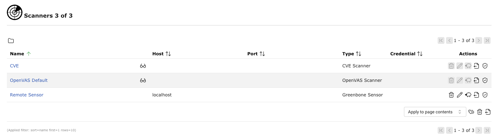
Рис. 9.36 Страница Сканеры использование всех существующих сканеров¶
Страница раскрыта
Нажмите на имя сканера, чтобы отобразить подробную информацию о сканере. Нажмите чтобы открыть страницу, откройте сканер.
Доступны следующие вкладки:
- Информация
Общие сведения о сканере.
- Пользовательские теги
Присвоенные теги (см. главу 7.4).
- Разрешения
Назначенные разрешения (см. главу 8.4).
В левом верхнем углу пульта доступны следующие действия:
- Ознакомьтесь с соответствующим главой руководства пользователя.
- Показать страницу списка всех сканеров.
- Создать новый сканер (см. главу 9.11.1).
- Клонируйте сканер. Клонировать можно только сканерами, созданными самостоятельно.
- Отредактируйте сканер. Редактировать можно только самостоятельно созданные сканеры.
- Переместите сканер в мусорную корзину. В корзину можно переместить только созданные вами самими сканеры.
- Экспортируйте сканер как файл XML.
- Убедитесь, что сканер подключен к сети и что менеджер может подключиться к нему, используя предоставленные сертификаты.
9.12 Использование оповещений¶
Оповещения приговоров к системе. Если происходит неожиданное событие (например, завершение задачи), то сначала выполняется указанное условие (например, обнаружена уязвимость с высокой категорией серьезности). Если условия соблюдены, действие будет выполнено, например, электронное письмо будет отправлено на текущий адрес.
9.12.1 Создание оповещений¶
Новое оповещение можно создать следующим образом:
Выбирать Конфигурация > Оповещения.
Нажмите
.Определите предупреждение (см. Рис. 9.37).
Нажмите Сохранять.
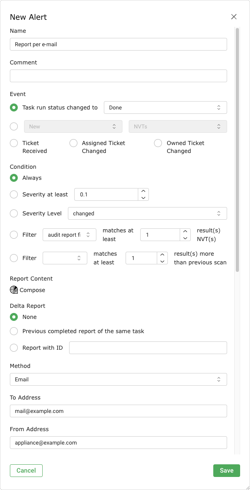
Рис. 9.37 Создание новых оповещений¶

Можно определить следующие данные оповещения:
- Имя
Определение имени. Имя можно выбрать произвольно.
- Комментарий
Необязательный комментарий может оставить дополнительную информацию.
- Событие
Определение событий, для которых отправляется предупреждающее сообщение. Оповещения могут быть отправлены, если статус задачи изменится, если SecInfo (VT, CVE, CPE, рекомендации CERT-Bund, рекомендации DFN-CERT) добавляется или обновляется или если заявка назначена или отредактирована (см. главу) 10.6).
- Состояние
Определение дополнительных условий, которые должны быть выполнены.
Примечание
Параметры различаются для задач, для SecInfo и для оповещений, границ с заявками.
Предупреждающее сообщение может появиться:
всегда
Если достигнут уровень настоящей серьезности.
Если уровень серьезно возрастает, увеличивается или выводится.
Если Powerfilter соответствует хотя бы указанному количеству результатов больше, чем при предыдущем сканировании.
- Содержимое отчета (только для оповещений, связанных с задачами)
Содержание отчета можно проверить с помощью дополнительного фильтра. Нажав
откроется составитель отчета о сканировании и можно выбрать Powerfilter (см. главу) 10.2.2).
Фильтр должен быть создан заранее (см. главу 7.3).
Для Включать, активируйте флажок Примечания для включения прикрепленных примечаний и установки флажка Переопределения чтобы пометить включенные переопределения и отключить их строгие текстовые поля.
Для Пагинация, активируйте флажок остатки Чтобы настроить фильтр результатов, отображаемый на странице веб-интерфейса, не были указаны результаты в отправленном отчете.- URL-адрес подробной информации (только для оповещений, связей с SecInfo)
Определение URL-адреса, с которого получен SecInfo.
- Дельта-отчет (только для оповещений, групп с задачами)
При желании можно создать дельта-отчет либо по сравнению с обычным отчетом, либо по сравнению с отчетом с идентификатором.
- Метод
Выбор метода оповещения. Для каждого оповещения можно выбрать только один метод. Если для одного и того же события должны быть активированы разные оповещения, необходимо создать несколько оповещений и связать их с одним и тем же событием.
Примечание
Некоторые методы нельзя использовать для оповещений SecInfo или протокола, ссылок с заявками.
Возможные следующие методы:
- Электронная почта
Отчет отправляется на указанный адрес электронной почты.
Для использования этого метода необходимо настроить почтовый хаб с помощью меню администрирования ГОС (см. гл. 6.2.11).
Настройки По адресу, С адрес и Содержание необходимо настроить работу оповещений по электронной почте. Тема и шифрование букв не являются обязательными.
- По адресу
Адрес электронной почты, по которому будет отправлено электронное письмо.
- С адрес
Адрес электронной почты, указанный в качестве отправителя письма.
- Предмет
Для тем можно использовать следующие заполнения:
$d: дата последней проверки SecInfo или пустое значение для оповещений о задачах/заявках.
$e: описание событий.
$n: имя задачи или пустое значение для оповещений SecInfo/заявок.
$N: имя оповещения.
$q: тип событий SecInfo (Новый, Обновлено) или пустое для оповещений о задачах/заявках.
$s: тип SecInfo (например, НТВ или Консультации CERT-Bund) или пустое для оповещений о задачах/заявках.
$S: см. $с, но во множественном числе (например НТВ, Рекомендации CERT-Bund) или пустое для оповещений о задачах/заявках.
$T: общее количество объектов в списке для оповещений SecInfo или 0 для оповещений о задачах/заявках.
$u: владелец оповещения или имя вошедшего в систему пользователя, если оповещение было вызвано вручную.
$U: UUID оповещения.
$$: знак доллара ($).
- Шифирование электронной почты
Электронное письмо можно зашифровать с помощью сертификата S/MIME или ключа PGP. Сертификат S/MIME или открытый ключ PGP. Пару ключей можно выбрать раскрывающийся список. Шифирование электронной почты или созданные с помощью нажатия кнопки
.Файл сертификата S/MIME должен обеспечивать следующие условия:
Закодирован в формате PEM (нельзя использовать двойной файл DER)
Использование формата X.509
Выдается на адрес электронной почты получателя (По адресу) и действительный (неопровержимый)
Объединяет все сертификаты-цепочки (корневой сертификат и все промежуточные сертификаты)
Если исходный сертификат используется в связанном формате, который также включает закрытый ключ, необходимо загрузить только незашифрованный сертификат.
- Содержание
Содержимое книги может быть простое.
- Включить отчет
Отчет можно включить прямо в электронном письме. Любой формат отчета, в котором используется тип контента, начинающийся с текст/ Выбор возможен, поскольку в электронных письмах напрямую не используется двойной контент. Настраиваемый формат отчета Настраиваемые результаты CSV выбран, отчет по конфигурации можно выбрать в раскрывающемся списке Отчет о конфигурации.
- Прикрепить отчет
Отчет можно прикрепить к письму. Формат отчета может быть выбран любой. Если выбран настраиваемый формат отчета (Настраиваемые результаты CSV, Топология SVG, Веринице ИСМ или Веринице ISM все результаты), отчет о конфигурации можно выбрать из выпадающего списка Отчет о конфигурации. Отчет будет прикреплен к созданному электронному письму в правильном типе MIME.
Содержимое сообщений электронной почты можно публиковать как для включенного, так и для прикрепленного отчета. Для сообщений можно использовать следующие поля:
$c: описание условий.
$d: дата последней проверки SecInfo или пустое значение для оповещений о задачах/заявках.
$e: описание событий.
$F: имя фильтра.
$f: термин фильтр.
$H: сводка хоста.
$i: текст отчета или список объектов SecInfo (только если включает отчет/список).
$n: имя задачи или пустое значение для оповещений SecInfo/заявок.
$N: имя оповещения.
$q: тип событий SecInfo (Новый, Обновлено) или пустое для оповещений о задачах/заявках.
$r: имя формы отчета.
$s: тип SecInfo (например, НТВ или Консультации CERT-Bund) или пустое для оповещений о задачах/заявках.
$S: см. $с, но во множественном числе (например НТВ, Рекомендации CERT-Bund) или пустое для оповещений о задачах/заявках.
$t: примечание, если отчет был усечен.
$T: общее количество объектов в списке для оповещений SecInfo или 0 для оповещений о задачах/заявках.
$u: владелец оповещения или имя вошедшего в систему пользователя, если оповещение было вызвано вручную.
$U: UUID оповещения.
$z: часовой пояс.
$$: знак доллара ($).
- HTTP Получить
URL-адрес выдается как HTTP Get. Пример: текстовое сообщение SMS можно отправить через шлюз HTTP Получить или создать отчет о проблемах с идентификацией системы. Для URL-адреса можно использовать следующие поля:
$n: имя задачи или пустое значение для оповещений SecInfo/заявок.
$e: описание событий.
$c: описание условий.
$$: знак доллара ($).
Пример:
https://example.com/$n→https://example.com/Scan_task_1- SCP
Отчет копируется в указанное место назначения через протокол безопасного копирования (SCP) с использованием учетных данных для аутентификации.
Все настройки(Полномочия, Хозяин, Известные хосты, Путь и Отчет) необходимо настроить для работы оповещения SCP.
- Полномочия
Имя пользователя и пароль или имя пользователя и учетные данные переключателя SSH, которые содержат данные для входа в целевую систему.
- Хозяин
Имя хоста или IP-адрес системы включены. Поддерживается только одна система назначения для каждого оповещения SCP.
- Порт
Порт, предназначенный для подключения к стационарной системе. По умолчанию используется порт 22. Только значения, соответствующие список стандартизированных портов (от 1 до 65535). Если сохранено неподдерживаемое значение, либо значение по умолчанию
22вместо этого используется, или, например, введенное значение усекается,70000становится7000.
- Известные хосты
Открытый ключ SSH включает систему в формате «публичный_ключ протокола хоста», например.
локальный хост ssh-rsa AAAAB3NzaC1y...P3pCquVb. Часть «хост» должна соответствовать имени хоста или IP-адресу соответственно.
- Путь
Полный путь к целевому каталогу и файлу, например
/home/user/Загрузки/report.xml. Сокращение пути, например, с помощью~не события. Для имени файла можно использовать следующие поля:$$: знак доллара ($).
$n: имя задачи.
- Отчет
Формат скопированного отчета.
- Отчет о конфигурации
Конфигурация отчета в случае, если выбран настраиваемый формат отчета (Настраиваемые результаты CSV, Топология SVG, Веринице ИСМ или Веринице ISM все результаты).
- Отправить хосту
Отчет отправляется о произвольном результате хост-порта через TCP. Разрешено использование IP-адреса или имени хоста.
Формат отчета можно выбрать из стандартных форматов отчета. Если выбран настраиваемый формат отчета (Настраиваемые результаты CSV, Топология SVG, Веринице ИСМ или Веринице ISM все результаты), также можно выбрать конфигурацию отчета.
- СМБ
Отчет копируется в указанное место назначения по протоколу Server Message Block (SMB) с использованием учетных данных для аутентификации.
Настройки Полномочия, Поделиться путем и Путь к файлу необходимо настроить работу оповещения SMB. Выбор формы отчета и конфигурации отчета не является обязательным.
- Полномочия
Учетные данные имени пользователя и пароля, содержащие данные для входа в систему.
- Поделиться путем
Путь к общему ресурсу содержит часть пути UNC, содержащую хост и имя общего ресурса, например
\\хост\доля. Прежде чем можно будет использовать оповещение, необходимо создать общий путь в голосовой системе.
- Путь к файлу
Отчет о положении в общей сети, настроенной через общую сеть.
Примечание
Если путь к файлу содержит незначительные подкаталоги, необходимо указать необходимые подкаталоги.
Добавляет расширение файла, содержащее форму, выбранную в раскрывающемся списке. Формат отчета.
Имя файла экспортного отчета по умолчанию (см. главу 7.7) добавляется к пути к файлу, если путь к файлу заканчивается на
\.Примечание
Если задача использует тег
smb-alert:file_pathсо значением, то это значение используется в качестве пути к файлу вместо того, который был настроен с помощью интерпретации (см. главу 7.4). Пример:smb-alert:file_path=alert_1начало пути к файлупредупреждение_1.Для пути к файлу можно использовать следующие заполнения:
%C: дата создания в формате ГГГГМДД. Метки изменяются на текущую, если дата создания недоступна.
%c: время создания в формате ЧЧММСС. Изменяется на текущее время, если время создания недоступно.
%D: текущая дата в формате ГГГГМДД.
%F: имя используемого отчета (XML для списка и типов, отличных от отчетов).
%M: изменение даты в формате ГГГГМДД. Изменено на дату создания или на текущую дату, если изменение даты недоступно.
%m: время изменений в формате ЧЧММСС. Изменено на время создания или на текущее время, если время изменения недоступно.
%N: имя объекта или связанной задачи для отчетов. Списки и типы без имени будут использовать тип (см. %T).
%T: тип объекта, например «задача», «список_портов». Множественное число для страниц списка.
%t: текущее время в формате ЧЧММСС.
%U: уникальный идентификатор объекта или «список» для списков из нескольких объектов.
%u: имя пользователя, вошедшего в систему в данный момент.
%%: знак валюты (%).
- Формат отчета
Формат скопированного отчета. Если формат отчета по умолчанию не определен, то используется XML.
- Отчет о конфигурации
Конфигурация отчета в случае, если выбран настраиваемый формат отчета (Настраиваемые результаты CSV, Топология SVG, Веринице ИСМ или Веринице ISM все результаты).
- Макс. протокол
Версия SMB, если сервер SMB поддерживает только определенные версии. Можно выбрать два варианта:
По умолчанию
SMB3
SMB2
NT1 (для SMBv1)
Если нет версии SMB или По умолчанию выбранная, используется последняя вспомогательная версия.
- SNMP
Данному агенту отправляется SNMP-ловушка. Предоставленная строка сообщества используется для аутентификации ловушки SNMP. Агент является целевым приемником ловушек SNMP. Для сообщений можно использовать следующие поля:
$$: знак доллара ($).
$d: дата последней проверки SecInfo или пустое значение для оповещений о задачах/заявках.
$e: описание событий.
$n: имя задачи или пустое значение для оповещений SecInfo/заявок.
$q: тип событий SecInfo (Новый, Обновлено) или пустое для оповещений о задачах/заявках.
$s: тип SecInfo (например, НТВ или Консультации CERT-Bund) или пустое для оповещений о задачах/заявках.
$S: см. $с, но во множественном числе (например НТВ, Рекомендации CERT-Bund) или пустое для оповещений о задачах/заявках.
$T: общее количество объектов в списке для оповещений SecInfo или 0 для оповещений о задачах/заявках.
- Соединитель источника огня
Данные могут быть автоматически отправлены в Центр управления огневой мощью Cisco (ранее известный как Центр защиты Sourcefire). Для получения дополнительной информации см. главу 17.3.
- Начать задачу
Оповещение может запустить дополнительную задачу. Задачу вы выбираете из выпадающего списка.
- Системный регистратор
Предупреждение отправки демону системного журнала. Сервер Syslog Определяется с помощью меню администрирования ГОС (см. главу) 6.2.12).
Примечание
Часовой пояс устройства (UTC±00:00) используется для заметок времени в журналах, если он не настроен на конец системного журнала.
- verinice.PRO Коннектор
Данные могут быть отправлены в установку verinice.PRO автоматически. Для получения дополнительной информации см. главу 17.1.
- Переломный момент СМС
HTTPS API используется для загрузки отчета в формате CSV в системе управления безопасностью TippingPoint (SMS).
- Имя хоста/IP
Имя хоста или IP-адрес SMS-сообщения TippingPoint. Отчет в формате CSV, а затем отправить
https://<адрес>/vulnscanner/importгде<адрес>— введенное имя хоста/IP-адрес.
- Реквизиты для входа
Имя пользователя и пароль, содержащий действительную информацию для входа в систему TippingPoint SMS.
- SSL/TLS-сертификат
Сертификат CA, необходимый для проверки того, что хост, к которому имеется звуковое оповещение, является SMS-сообщением TippingPoint. Сертификат файла должен соответствовать следующим условиям:
Закодирован в формате PEM (нельзя использовать двойной файл DER)
Использование формата X.509
- Используйте обходной путь для сертификата по умолчанию
По умолчанию сертификат использует Переломный момент как общее имя (CN), которое в большинстве случаев не совпадает с именем хоста/IP-адресом SMS-сообщения TippingPoint. Если этот параметр включен, обходным путем временно меняет CN и преобразует его в фактическое имя хоста/IP-адреса во внутренней части соединения.
- Алемба vFire
Создается новый билет в приложении управления сервисами vFire. Отчет может быть прикреплен в одном или нескольких форматах. Для получения дополнительной информации см. главу 17.4.
9.12.2 Назначение существующего оповещения задачи¶
Если впоследствии необходимо будет использовать предупреждение, оно должно быть определено для конкретной задачи следующим образом:
Примечание
Уже настроенную и используемую задачу можно сохранять, но это не влияет на уже созданные отчеты.
Выбирать Сканирование > Задачи в меню.
В строке задачи нажмите
.Выберите оповещения раскрывающегося списка. Оповещения (видеть Рис. 9.38).
Примечание
Новое оповещение можно создать, нажав кнопку
.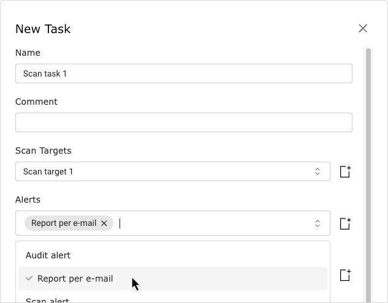
Рис. 9.38 Настройка задач с оповещением¶
Нажмите Сохранять.
→ После этой задачи, использующей оповещение, появляется на странице описание оповещений (см. Рис. 9.39).
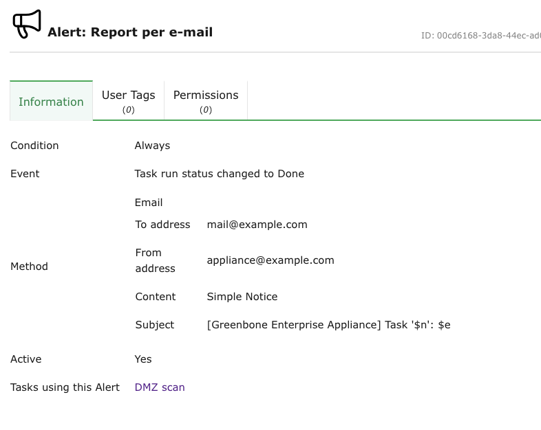
Рис. 9.39 Задача с определением использования оповещения¶


9.12.3 Управление оповещениями¶
Страница списка
Все подаваемые оповещения можно отобразить, выбрав Конфигурация > Оповещения в меню.
Для всех оповещений отображается следующая информация:
- Имя
Название оповещения.
- Событие
Событие, при котором сработало оповещение.
- Состояние
Условие, которое должно было быть выполнено, чтобы вызвать оповещение.
- Метод
Выбранный метод оповещения, например, с дополнительной информацией, на какой IP-адрес или адрес электронной почты отправляется предупреждающее сообщение.
- Фильтр (только для оповещений, связанных с задачами)
Фильтр, прилагаемый к содержимому отчета.
- Активный
Индикация того, включено или отключено оповещение.
Для всех оповещений доступны следующие действия:
- Переместите оповещения в корзину. В корзину можно переместить только те оповещения, которые в данный момент не использовались.
- Отредактируйте оповещение.
- Клонируйте оповещения.
- Экспортируйте оповещения в видео XML-файла.
- Проверьте оповещение.
Примечание
Нажав или под списком оповещений можно одновременно переместить в корзину или экспортировать более одного оповещения. Раскрывающийся список используется для выбора того, какие оповещения будут перенесены в корзину или экспортированы.
Страница раскрыта
Нажмите на название оповещения, чтобы отобразить подробную информацию о нем. Нажмите чтобы открыть страницу сведений об оповещении.
Доступны следующие вкладки:
- Информация
Общая информация об оповещениях.
- Пользовательские теги
Присвоенные теги (см. главу 7.4).
- Разрешения
Назначенные разрешения (см. главу 8.4).
В левом верхнем углу пульта доступны следующие действия:
- Ознакомьтесь с соответствующим главой руководства пользователя.
- Показать страницу со списком всех оповещений.
- Создать новое оповещение (см. главу 9.12.1).
- Клонируйте оповещения.
- Отредактируйте оповещение.
- Переместите оповещения в корзину. В корзину можно переместить только те оповещения, которые в данный момент не использовались.
- Экспортируйте оповещения в видео XML-файла.
9.13 Препятствия при сканировании¶
Существует несколько типичных проблем, которые могут возникнуть во время использования устройств по умолчанию. Хотя значения устройства по умолчанию действительны для большинства средств и клиентов, в зависимости от фактической среды и конфигурации сканируемых хостов некоторые случаи могут возникать.
9.13.1 Хосты не найдены¶
Во время обращения (либо Открытие или Полный и быстрый), устройство по умолчанию сначала использует команду ping, чтобы проверить доступность настроенных целей. Если цель не отвечает на запрос ping, она считается неработающей и не будет сканироваться сканером портов или каким-либо виртуальным терминалом.
В большинстве локальных сетей это не вызывает никаких проблем, поскольку все устройства обеспечивают пинг-запрос. Но иногда (локальные) брандмауэры или другие конфигурации могут отключать ответ ping. В этом случае объект не будет сканироваться и не будет включен в результаты и отчет о сканировании.
Для решения этой проблемы, как целевая часть, так и вставка, применяется к живому тесту (см. Живой тест).
Если цель не отвечает на запрос проверки связи, можно проверить проверку связи TCP. Если цель находится в том же широковещательном домене, можно также попробовать проверить проверку ARP.
9.13.2 Длительные периоды лечения¶
Как только с помощью команды ping обнаруживается, что цель жива, устройство использует порты сканера для случайных целей. По умолчанию используется список портов TCP, количество портов около 5000. Если цель (локальным) брандмауэром, отбрасывающим большую часть пакета, при сканировании этих портов потребуется дождаться тайм-аута каждого отдельного порта. Если хосты защищены (локальными) брандмауэрами, управляемые порты или брандмауэры могут быть настроены. Если брандмауэр не отклоняет запрос, а отклоняет его, сканеру портов не нужно ждать истечения времени ожидания. Это особенно актуально, если в сканере включены UDP-порты.
9.13.3 ВТ не используется¶
Это происходит особенно часто, если используются виртуальные устройства на основе UDP, такие как виртуальные устройства, использующие протокол SNMP. Если версия по умолчанию Полный и быстрый используется, SNMP VTs включен. Но если цель настроена использовать список портов по умолчанию, VT не выполняется. Это происходит потому, что список портов по умолчанию не включает порты UDP. Поэтому порт 161/UDP (SNMP) не обнаружен и отключен из другого порта. Сканирование обнаружения и рекомендуемая обработка автоматически. Полный и быстрый Корректировка сканирования на основе сервисов. Если порт UDP не обнаружен, SNMP VT не работает.
Не включаете все порты по умолчанию в список портов. Это значительно продлит проверку. Лучшим вариантом является настройка списка портов на портах, которые используются в окружающей среде и используются брандмауэрами.
9.13.4 Сканирование виртуальных хостов¶
Сканер позволяет находить все взаимосвязи имен хостов и IP-адресов без необходимости дополнительного ввода данных пользователем.
В окружающей среде виртуальные хосты (vhosts), в отчетах о сканировании будет меньше результатов, так как дубликаты проверяются.
Две настройки сканера обрабатывают сканирование виртуальных хостов (см. главу 9.9.4):
- test_empty_vhost
Если этот параметр включен, сканер также сначала цель, используя пустые значения виртуального хоста в дополнении к переменным значениям целей виртуального хоста.
- expand_vhosts
Если этот параметр включен, список виртуальных хостов целевого объекта изменяется значениями, полученными из таких источников, по запросу обратного поиска и проверки VT на наличие сертификатов SSL/TLS.